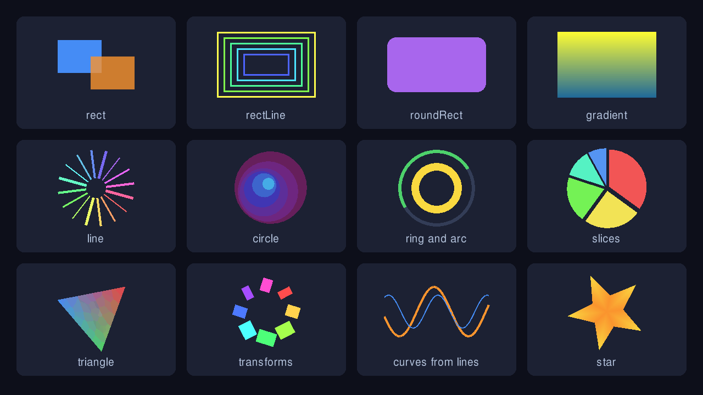
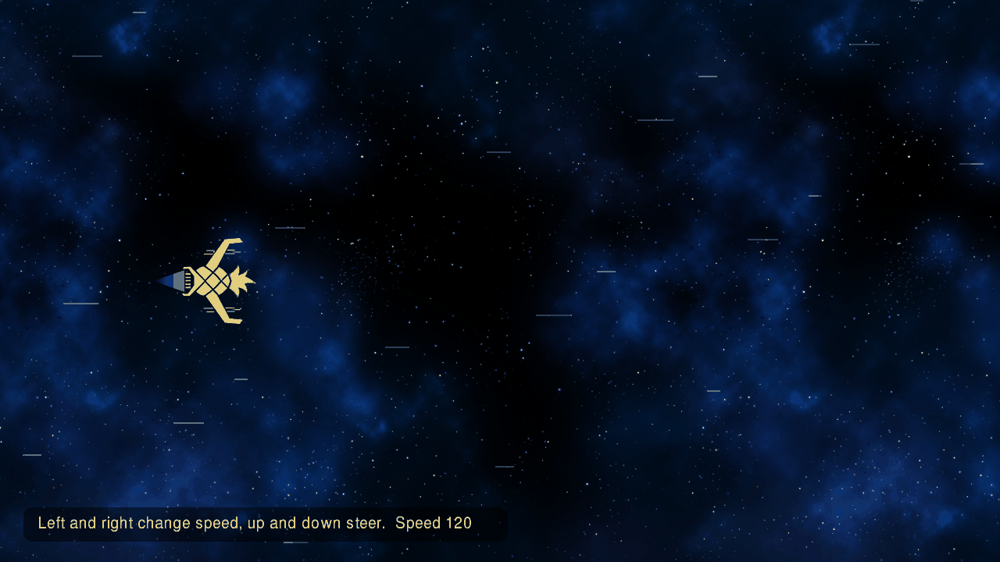
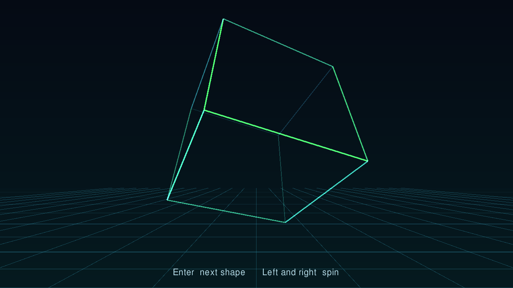
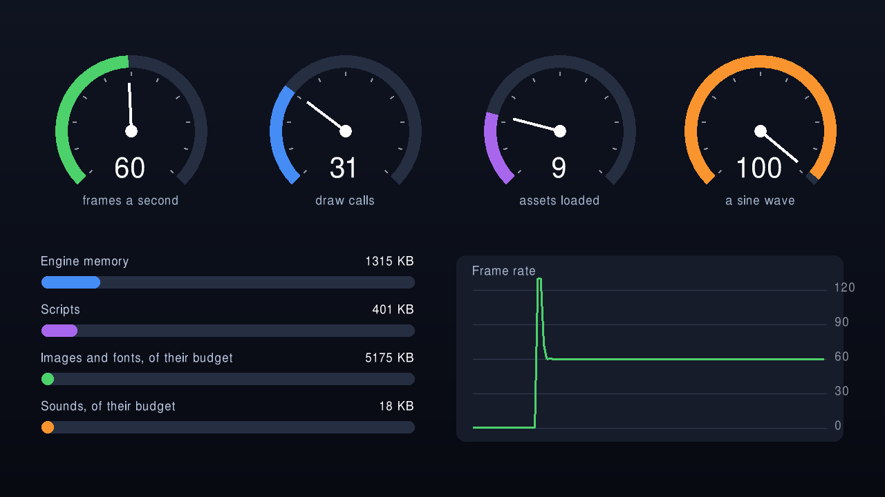
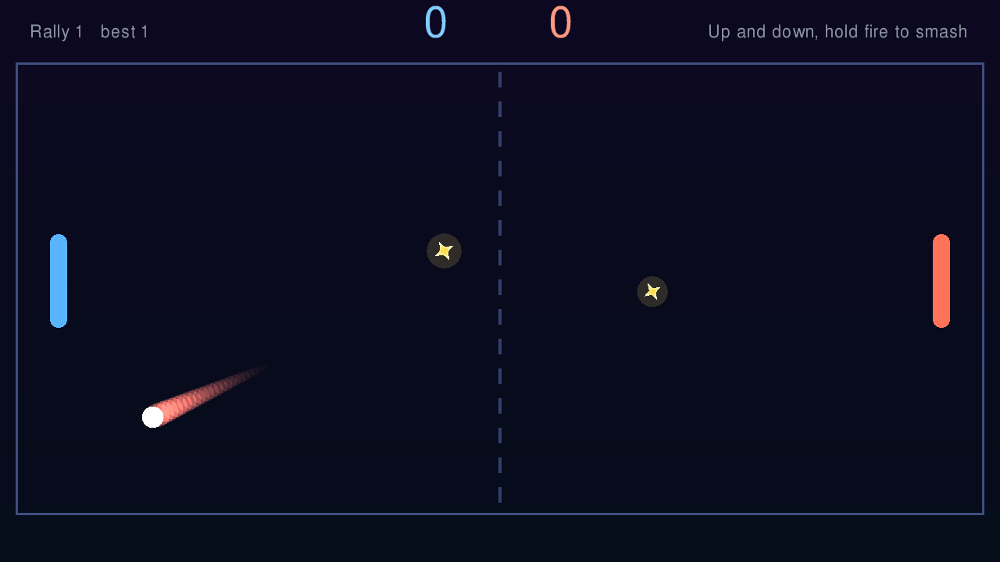
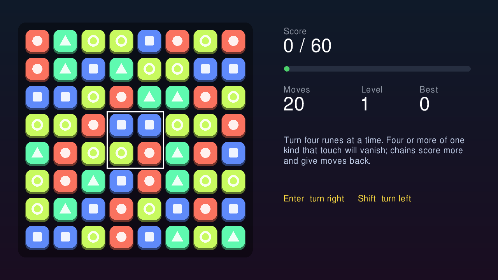
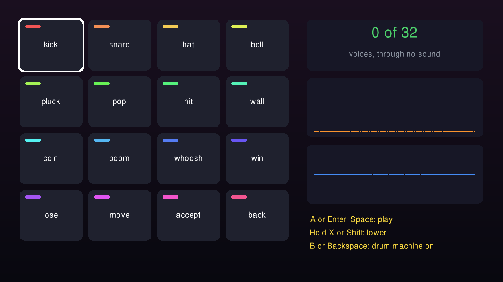
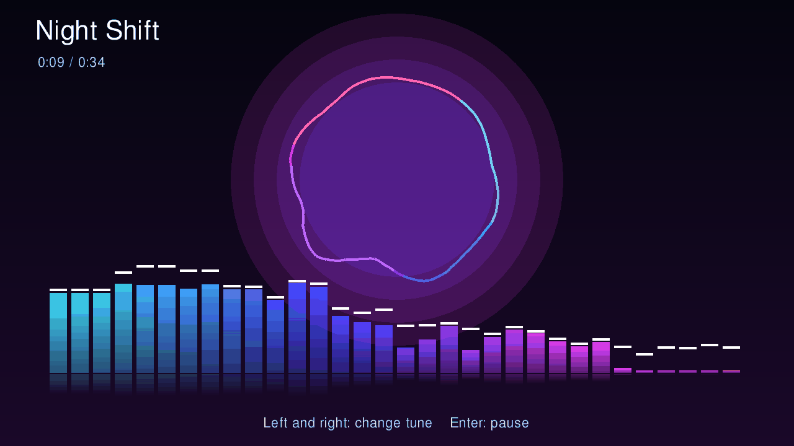

Demos
Every screen of the showcase, with its whole script.
Drawing
Shapes
Rectangles, circles, arcs, lines, gradients and triangles

shapes/main.as 114 lines
// Every shape the canvas can draw.
class ShapesScreen : Screen
{
Font@ font = assets::font("global:freesans.sfn", 22);
float t = 0;
void update(float dt) { t += dt; }
void cell(Canvas@ c, uint index, const string &in label)
{
float x = float(index % 4) * 310 + 30;
float y = float(index / 4) * 225 + 30;
c.roundRect(x, y, 290, 205, 14, Color(0.11f, 0.13f, 0.2f));
c.text(font, label, x + 145, y + 170, Color(0.7f, 0.76f, 0.86f), AlignCenter);
c.push();
c.translate(x + 145, y + 88);
}
void draw(Canvas@ c)
{
c.design(1280, 720);
c.rect(0, 0, 1280, 720, Color(0.05f, 0.06f, 0.1f));
cell(c, 0, "rect");
c.rect(-70, -45, 80, 60, Blue);
c.rect(-10, -15, 80, 60, fade(Orange, 0.8f));
c.pop();
cell(c, 1, "rectLine");
for (int i = 0; i < 5; i++)
c.rectLine(-90 + i * 12, -60 + i * 10, 180 - i * 24, 120 - i * 20, 3, hsv(float(i) * 0.12f + t * 0.1f, 0.7f, 1));
c.pop();
cell(c, 2, "roundRect");
c.roundRect(-90, -50, 180, 100, 20 + 20 * sin(t * 2), Purple);
c.pop();
cell(c, 3, "gradient");
c.gradient(-90, -60, 180, 120, hsv(t * 0.1f, 0.8f, 1), hsv(t * 0.1f + 0.4f, 0.8f, 0.6f));
c.pop();
cell(c, 4, "line");
for (int i = 0; i < 16; i++)
{
float a = float(i) * 3.14159f / 8 + t * 0.4f;
c.line(cos(a) * 18, sin(a) * 18, cos(a) * 70, sin(a) * 70, 2 + float(i % 4), hsv(float(i) / 16, 0.6f, 1));
}
c.pop();
cell(c, 5, "circle");
for (int i = 6; i > 0; i--)
c.circle(sin(t + i) * 8, cos(t * 1.2f + i) * 8, float(i) * 11, hsv(float(i) * 0.06f + 0.5f, 0.7f, 0.4f + 0.1f * float(6 - i)));
c.pop();
cell(c, 6, "ring and arc");
c.ring(0, 0, 70, 6, Color(0.2f, 0.24f, 0.34f));
c.arc(0, 0, 70, 6, t * 90, t * 90 + 120 + 60 * sin(t), Green);
c.arc(0, 0, 46, 14, -90, -90 + 360 * smooth(0.5f + 0.5f * sin(t)), Yellow);
c.pop();
cell(c, 7, "slices");
float from = -90;
array<float> parts = { 0.35f, 0.25f, 0.2f, 0.12f, 0.08f };
for (uint i = 0; i < parts.length(); i++)
{
float to = from + parts[i] * 360;
float middle = (from + to) * 0.5f * 3.14159f / 180;
c.arc(cos(middle) * 5, sin(middle) * 5, 68, 68, from, to, hsv(float(i) * 0.15f, 0.65f, 0.95f));
from = to;
}
c.pop();
cell(c, 8, "triangle");
c.rotate(t * 30);
c.triangle(Vec2(0, -70), Vec2(62, 40), Vec2(-62, 40), Red, Green, Blue);
c.pop();
cell(c, 9, "transforms");
for (int i = 0; i < 8; i++)
{
c.rotate(45);
c.push();
c.translate(0, -48);
c.rotate(t * 120);
c.scale(1 + 0.4f * sin(t * 3 + i), 1);
c.rect(-12, -12, 24, 24, hsv(float(i) / 8, 0.7f, 1));
c.pop();
}
c.pop();
cell(c, 10, "curves from lines");
for (int i = 0; i < 60; i++)
{
float x0 = -95 + float(i) * 190 / 60;
float x1 = -95 + float(i + 1) * 190 / 60;
c.line(x0, sin(x0 * 0.05f + t * 3) * 45, x1, sin(x1 * 0.05f + t * 3) * 45, 4, Orange);
c.line(x0, cos(x0 * 0.07f - t * 2) * 30, x1, cos(x1 * 0.07f - t * 2) * 30, 2, Blue);
}
c.pop();
cell(c, 11, "star");
for (int i = 0; i < 5; i++)
{
float a = float(i) * 1.25664f - 1.5708f + t * 0.5f;
Vec2 tip(cos(a) * 72, sin(a) * 72);
Vec2 l(cos(a - 0.62832f) * 30, sin(a - 0.62832f) * 30);
Vec2 r(cos(a + 0.62832f) * 30, sin(a + 0.62832f) * 30);
c.triangle(tip, l, Vec2(0, 0), Yellow, Orange, Orange);
c.triangle(tip, r, Vec2(0, 0), Yellow, Orange, Orange);
}
c.pop();
}
}
Text
Scalable fonts, alignment, wrapping and per-letter effects
text/main.as 94 lines
// Text: one scalable font at several sizes, alignment, wrapping and effects letter by letter.
class TextScreen : Screen
{
array<Font@> sizes;
Font@ body = assets::font("global:freesans.sfn", 24);
Font@ big = assets::font("global:freesans.sfn", 64);
float t = 0;
string story = "Glyphs are drawn once into an atlas, so changing a line of text costs nothing but a few quads. "
"This paragraph is wrapped to the width of the box beside it, and the box changes width all the time. "
"Accents work too: caf\xC3\xA9, na\xC3\xAFve, \xC3\x9C" "ber, \xC2\xA3" "5 and \xC2\xA9.";
void onEnter()
{
array<uint> points = { 14, 20, 28, 40, 56 };
for (uint i = 0; i < points.length(); i++)
sizes.insertLast(assets::font("global:freesans.sfn", points[i]));
}
void update(float dt) { t += dt; }
void draw(Canvas@ c)
{
c.design(1280, 720);
c.rect(0, 0, 1280, 720, Color(0.06f, 0.06f, 0.09f));
float y = 24;
for (uint i = 0; i < sizes.length(); i++)
{
c.text(sizes[i], "The quick brown fox", 40, y, hsv(0.5f + float(i) * 0.06f, 0.4f, 1));
y += sizes[i].measure("X").y;
}
// Alignment around a line.
c.line(960, 30, 960, 190, 2, Color(0.3f, 0.34f, 0.44f));
c.text(body, "left of the line", 960, 40, White, AlignRight);
c.text(body, "centred on it", 960, 90, Yellow, AlignCenter);
c.text(body, "right of the line", 960, 140, Green, AlignLeft);
// Wrapping.
float width = 420 + 140 * sin(t * 0.7f);
float height = c.paragraph(body, story, 60, 280, width, Color(0.85f, 0.88f, 0.95f));
c.rectLine(50, 270, width + 20, height + 20, 2, Color(0.3f, 0.4f, 0.6f));
// Letter by letter.
wave(c, "WAVE", 700, 290);
rainbow(c, "RAINBOW", 700, 390);
shake(c, "SHAKE", 700, 490);
typed(c, "Typed one letter at a time...", 700, 600);
c.push();
c.translate(1120, 560);
c.rotate(t * 25);
c.text(body, "rotated", 0, -14, Orange, AlignCenter);
c.pop();
c.push();
c.translate(1120, 380);
float s = 1 + 0.5f * sin(t * 2);
c.scale(s, s);
c.text(body, "scaled", 0, -14, Purple, AlignCenter);
c.pop();
}
void wave(Canvas@ c, const string &in text, float x, float y)
{
for (uint i = 0; i < text.length(); i++)
{
string letter = text.substr(i, 1);
x += c.text(big, letter, x, y + sin(t * 4 + float(i) * 0.7f) * 16, Blue);
}
}
void rainbow(Canvas@ c, const string &in text, float x, float y)
{
for (uint i = 0; i < text.length(); i++)
x += c.text(big, text.substr(i, 1), x, y, hsv(t * 0.3f + float(i) * 0.1f, 0.7f, 1));
}
void shake(Canvas@ c, const string &in text, float x, float y)
{
for (uint i = 0; i < text.length(); i++)
x += c.text(big, text.substr(i, 1), x + random(-3, 3), y + random(-3, 3), Red);
}
void typed(Canvas@ c, const string &in text, float x, float y)
{
uint count = uint(t * 12) % (text.length() + 20);
string shown = text.substr(0, count > text.length() ? text.length() : count);
float w = c.text(body, shown, x, y, White);
if (int(t * 3) % 2 == 0)
c.rect(x + w + 3, y, 3, 26, White);
}
}
Blending
Additive light, alpha and a fire made of particles

blend/main.as 96 lines
// Blend modes, and a fire built from additive particles.
class Particle
{
float x, y, vx, vy, life, size;
}
class BlendScreen : Screen
{
Font@ font = assets::font("global:freesans.sfn", 22);
array<Particle> sparks(260); // reused for ever, so nothing is allocated while it burns
float t = 0;
void onEnter()
{
for (uint i = 0; i < sparks.length(); i++)
{
light(sparks[i]);
sparks[i].life = random();
}
}
void light(Particle@ p)
{
p.x = random(-40, 40);
p.y = random(-6, 6);
p.vx = random(-18, 18);
p.vy = random(-190, -90);
p.life = 1;
p.size = random(10, 26);
}
void update(float dt)
{
t += dt;
for (uint i = 0; i < sparks.length(); i++)
{
Particle@ p = sparks[i];
p.life -= dt * 0.75f;
p.x += (p.vx + sin(t * 3 + p.y * 0.03f) * 30) * dt;
p.y += p.vy * dt;
if (p.life <= 0)
light(p);
}
}
void lights(Canvas@ c, float x, float y, Blend mode, const string &in label)
{
c.push();
c.setBlend(mode);
for (int i = 0; i < 3; i++)
{
float a = t + float(i) * 2.0944f;
c.circle(x + cos(a) * 46, y + sin(a) * 46, 70, fade(hsv(float(i) / 3, 1, 0.9f), mode == BlendNone ? 1.0f : 0.75f));
}
c.pop();
c.text(font, label, x, y + 140, White, AlignCenter);
}
void draw(Canvas@ c)
{
c.design(1280, 720);
c.gradient(0, 0, 1280, 720, Color(0.05f, 0.05f, 0.1f), Color(0.1f, 0.05f, 0.08f));
for (int i = 0; i < 16; i++)
c.rect(float(i) * 80, 0, 40, 720, Color(1, 1, 1, 0.02f));
lights(c, 170, 190, BlendNone, "BlendNone");
lights(c, 470, 190, BlendAlpha, "BlendAlpha");
lights(c, 770, 190, BlendAdd, "BlendAdd");
// Fire.
c.push();
c.translate(1080, 560);
c.setBlend(BlendAdd);
for (uint i = 0; i < sparks.length(); i++)
{
Particle@ p = sparks[i];
float s = p.size * (0.4f + p.life * 0.6f);
c.circle(p.x, p.y, s, Color(1, 0.25f + 0.5f * p.life * p.life, 0.1f * p.life, 0.16f * p.life));
}
c.pop();
c.roundRect(1000, 566, 160, 26, 8, Color(0.25f, 0.17f, 0.12f));
c.text(font, "260 additive particles", 1080, 610, White, AlignCenter);
// Fading.
for (int i = 0; i < 10; i++)
{
c.push();
c.setAlpha(float(i + 1) / 10);
c.roundRect(70 + float(i) * 78, 440, 66, 120, 10, Blue);
c.pop();
c.text(font, formatInt((i + 1) * 10) + "%", 103 + float(i) * 78, 570, Gray, AlignCenter);
}
c.text(font, "setAlpha", 460, 620, White, AlignCenter);
}
}
Clipping
Scrolling lists, windows within windows and masks
clip/main.as 99 lines
// Clipping: a list that scrolls in a window, windows inside windows, and a spotlight.
class ClipScreen : Screen
{
Font@ font = assets::font("global:freesans.sfn", 24);
int chosen = 0;
float scroll = 0;
float t = 0;
int rows = 500;
float rowH = 44;
float viewH = 560;
void update(float dt)
{
t += dt;
if (input::repeated("down") && chosen + 1 < rows) chosen++;
if (input::repeated("up") && chosen > 0) chosen--;
float wanted = clamp(scroll, float(chosen + 1) * rowH - viewH, float(chosen) * rowH);
scroll = lerp(scroll, wanted < 0 ? 0 : wanted, 0.25f);
}
void draw(Canvas@ c)
{
c.design(1280, 720);
c.rect(0, 0, 1280, 720, Color(0.06f, 0.07f, 0.1f));
// Only the rows in view are drawn, so five hundred cost the same as twelve.
c.text(font, "500 rows: up and down", 60, 24, Color(0.7f, 0.76f, 0.86f));
c.roundRect(50, 70, 440, viewH + 20, 12, Color(0.1f, 0.12f, 0.18f));
c.push();
c.clip(60, 80, 420, viewH);
int first = int(scroll / rowH);
for (int i = first; i < rows && i < first + 15; i++)
{
float y = 80 + float(i) * rowH - scroll;
if (i == chosen)
c.roundRect(64, y + 2, 412, rowH - 4, 8, Blue);
c.text(font, "Row " + formatInt(i + 1), 80, y + 7, i == chosen ? White : Color(0.75f, 0.8f, 0.88f));
c.circle(450, y + rowH / 2, 8, hsv(float(i) * 0.02f, 0.7f, 1));
}
c.pop();
float bar = viewH * viewH / (float(rows) * rowH);
c.roundRect(484, 80 + scroll / (float(rows) * rowH) * viewH, 6, bar < 24 ? 24 : bar, 3, Gray);
// Each window clips what is inside it, to the overlap of them all.
c.text(font, "windows in windows", 560, 24, Color(0.7f, 0.76f, 0.86f));
c.push();
windowIn(c, 560, 70, 320, 280, 4);
c.pop();
// A spotlight, from thin clips.
c.text(font, "a round mask from strips", 930, 24, Color(0.7f, 0.76f, 0.86f));
float cx = 1080 + cos(t) * 80;
float cy = 210 + sin(t * 1.4f) * 70;
c.rect(930, 70, 300, 280, Color(0.1f, 0.1f, 0.14f));
for (float y = -60; y < 60; y += 5)
{
float half = sqrt(3600 - y * y);
c.push();
c.clip(930, 70, 300, 280);
c.clip(cx - half, cy + y, half * 2, 5);
picture(c, 930, 70, 300, 280);
c.pop();
}
// A wipe between two pictures.
c.text(font, "a wipe", 560, 400, Color(0.7f, 0.76f, 0.86f));
float at = 670 * (0.5f + 0.5f * sin(t * 0.8f));
c.push();
c.clip(560, 440, at, 210);
picture(c, 560, 440, 670, 210);
c.pop();
c.push();
c.clip(560 + at, 440, 670 - at, 210);
c.gradient(560, 440, 670, 210, Orange, Purple);
c.text(font, "the other side", 895, 530, White, AlignCenter);
c.pop();
c.rect(560 + at - 2, 440, 4, 210, White);
}
void windowIn(Canvas@ c, float x, float y, float w, float h, int depth)
{
c.clip(x, y, w, h);
c.roundRect(x, y, w, h, 10, hsv(0.55f + float(depth) * 0.08f, 0.5f, 0.35f + 0.1f * float(4 - depth)));
c.rect(x, y, w, 26, Color(0, 0, 0, 0.3f));
if (depth > 0)
windowIn(c, x + 26 + sin(t + depth) * 50, y + 46 + cos(t * 1.2f + depth) * 30, w - 40, h - 60, depth - 1);
else
c.circle(x + w / 2 + sin(t * 2) * 90, y + h / 2, 34, Yellow);
}
void picture(Canvas@ c, float x, float y, float w, float h)
{
c.gradient(x, y, w, h, Color(0.3f, 0.6f, 0.95f), Color(0.8f, 0.9f, 1));
c.circle(x + w * 0.75f, y + h * 0.3f, 34, Yellow);
c.triangle(Vec2(x, y + h), Vec2(x + w * 0.35f, y + h * 0.35f), Vec2(x + w * 0.7f, y + h), Green, Color(0.6f, 0.9f, 0.6f), Green);
c.triangle(Vec2(x + w * 0.4f, y + h), Vec2(x + w * 0.72f, y + h * 0.5f), Vec2(x + w, y + h), Color(0.15f, 0.55f, 0.3f), Green, Color(0.15f, 0.55f, 0.3f));
}
}
Sprites
Sprite animation
Frame animation and tiled water; steer the ship
waves/main.as 58 lines
// Sprite animation: five ripple frames around a ship, over tiled water.
class WavesScreen : Screen
{
Texture@ water = assets::texture("asset:water.png");
Texture@ ship = assets::texture("asset:ship.png");
array<Texture@> ripples;
Font@ font = assets::font("global:freesans.sfn", 22);
Vec2 position(640, 400);
Vec2 velocity;
float heading = 0;
float frame = 0;
float t = 0;
void onEnter()
{
for (int i = 0; i < 5; i++)
ripples.insertLast(assets::texture("asset:ripple" + formatInt(i) + ".png"));
}
void update(float dt)
{
t += dt;
velocity = velocity + input::move() * (600 * dt);
velocity = velocity * (1 - 1.8f * dt);
position = position + velocity * dt;
position.x = clamp(position.x, 80, 1200);
position.y = clamp(position.y, 160, 600);
heading = lerp(heading, velocity.x * 0.1f, 0.08f);
// The faster it goes, the faster the water moves.
frame += dt * (6 + sqrt(velocity.dot(velocity)) * 0.03f);
}
void draw(Canvas@ c)
{
c.design(1280, 720);
c.tile(water, 0, 0, 1280, 720, 320, 320, sin(t * 0.4f) * 30, t * 40);
c.setBlend(BlendAdd);
c.tile(water, 0, 0, 1280, 720, 460, 460, -t * 24, t * 16, Color(1, 1, 1, 0.25f));
c.setBlend(BlendAlpha);
c.push();
c.translate(position.x, position.y);
c.rotate(heading);
// Two frames at once, one fading into the next, look smoother than one.
uint now = uint(frame) % ripples.length();
uint next = (now + 1) % ripples.length();
float part = frame - float(int(frame));
c.image(ripples[now], -80, -208, 160, 415, fade(White, 1 - part));
c.image(ripples[next], -80, -208, 160, 415, fade(White, part));
c.image(ship, -46, -138 + sin(t * 2) * 2, 92, 276);
c.pop();
c.roundRect(30, 650, 520, 44, 12, Color(0, 0, 0, 0.5f));
c.text(font, "Steer with the arrows, d-pad or left stick", 50, 660);
}
}
Parallax
Scrolling layers that fit any screen size

parallax/main.as 56 lines
// Layers that scroll at different speeds. The old version loaded a set of images per resolution;
// this one is drawn once in design units and fits any screen.
class ParallaxScreen : Screen
{
Texture@ nebula = assets::texture("asset:nebula.png");
Texture@ farStars = assets::texture("asset:stars1.png");
Texture@ nearStars = assets::texture("asset:stars2.png");
Texture@ ship = assets::texture("asset:ship.png");
Font@ font = assets::font("global:freesans.sfn", 22);
float travel = 0;
float speed = 120;
Vec2 position(300, 360);
float bank = 0;
void update(float dt)
{
Vec2 move = input::move();
speed = clamp(speed + move.x * 260 * dt, 40, 700);
position.y = clamp(position.y + move.y * 320 * dt, 80, 640);
position.x = lerp(position.x, 220 + speed * 0.5f, 0.05f);
bank = lerp(bank, move.y * 14, 0.1f);
travel += speed * dt;
}
void draw(Canvas@ c)
{
c.design(1280, 720);
c.tile(nebula, 0, 0, 1280, 720, 900, 900, -travel * 0.08f, -60);
c.tile(farStars, 0, 0, 1280, 720, 700, 700, -travel * 0.25f, 0);
c.tile(nearStars, 0, 0, 1280, 720, 900, 900, -travel * 0.6f, 40);
// Streaks close to the camera.
for (int i = 0; i < 24; i++)
{
float depth = 1.2f + float(i % 5) * 0.5f;
float x = 1400 - float((travel * depth + float(i) * 173)) % 1600;
float y = float(i * 97 % 720);
c.rect(x, y, speed * 0.12f * depth, 2, Color(0.7f, 0.85f, 1, 0.35f));
}
c.push();
c.translate(position.x, position.y);
c.rotate(90 + bank);
c.setBlend(BlendAdd);
float flame = 26 + speed * 0.06f + random(0, 10);
c.triangle(Vec2(-14, 44), Vec2(14, 44), Vec2(0, 44 + flame), Color(0.4f, 0.7f, 1, 0.9f), Color(0.4f, 0.7f, 1, 0.9f), Color(0.1f, 0.2f, 1, 0));
c.setBlend(BlendAlpha);
c.image(ship, -55, -48, 110, 95);
c.pop();
c.roundRect(30, 650, 620, 44, 12, Color(0, 0, 0, 0.5f));
c.text(font, "Left and right change speed, up and down steer. Speed " + formatInt(int(speed)), 50, 660);
}
}
Stress test
How many sprites until it slows down?
stress/main.as 63 lines
// How much can it draw? Every sprite shares one image, so however many there are it is one draw.
class StressScreen : Screen
{
Texture@ sprite = assets::texture("asset:FishShip.png");
Font@ font = assets::font("global:freesans.sfn", 24);
array<float> x, y, vx, vy;
uint count = 0;
float t = 0;
void onEnter() { add(200); }
void add(uint more)
{
for (uint i = 0; i < more && count < 2000; i++)
{
x.insertLast(random(0, 1280));
y.insertLast(random(0, 720));
vx.insertLast(random(-160, 160));
vy.insertLast(random(-160, 160));
count++;
}
}
void remove(uint less)
{
for (uint i = 0; i < less && count > 0; i++)
{
x.removeLast();
y.removeLast();
vx.removeLast();
vy.removeLast();
count--;
}
}
void update(float dt)
{
t += dt;
if (input::repeated("up")) add(100);
if (input::repeated("down")) remove(100);
for (uint i = 0; i < count; i++)
{
x[i] += vx[i] * dt;
y[i] += vy[i] * dt;
if (x[i] < 0 || x[i] > 1280) vx[i] = -vx[i];
if (y[i] < 0 || y[i] > 720) vy[i] = -vy[i];
}
}
void draw(Canvas@ c)
{
c.design(1280, 720);
c.rect(0, 0, 1280, 720, Color(0.05f, 0.07f, 0.12f));
for (uint i = 0; i < count; i++)
c.image(sprite, x[i] - 22, y[i] - 20, 44, 40);
c.roundRect(30, 24, 420, 112, 12, Color(0, 0, 0, 0.7f));
c.text(font, formatInt(count) + " sprites in " + formatInt(app::draws()) + " draws", 50, 36);
c.text(font, formatInt(int(app::fps() + 0.5f)) + " frames a second", 50, 66, app::fps() > 55 ? Green : Orange);
c.text(font, "Up and down to change", 50, 96, Gray);
}
}
Effects
Cracktro
Scroller, raster bars, starfield and a sprite sheet

cracktro/main.as 108 lines
// The Nexgen cracktro, rebuilt: scroller, raster bars, starfield, sprite sheet and line mesh.
class CracktroScreen : Screen
{
Texture@ sheet = assets::texture("asset:sprite-sheet.png");
Font@ font = assets::font("global:freesans.sfn", 44);
Font@ logo = assets::font("global:freesans.sfn", 110);
string message = "HELLO WORLD ... THIS SCROLLER IS ONE STRING, DRAWN A LETTER AT A TIME WITH EVERY LETTER ON ITS OWN SINE WAVE ... "
"GREETINGS TO EVERYONE WHO STILL WRITES CODE FOR OLD MACHINES ... ";
array<float> widths;
float total = 0;
float t = 0;
array<float> sx, sy, sz;
void onEnter()
{
// Measured once: the scroller only needs to know how wide each letter is.
for (uint i = 0; i < message.length(); i++)
{
widths.insertLast(font.measure(message.substr(i, 1)).x);
total += widths[i];
}
for (int i = 0; i < 180; i++)
{
sx.insertLast(random(-1, 1));
sy.insertLast(random(-1, 1));
sz.insertLast(random(0.05f, 1));
}
}
void update(float dt)
{
t += dt;
for (uint i = 0; i < sz.length(); i++)
{
sz[i] -= dt * 0.35f;
if (sz[i] < 0.05f)
sz[i] = 1;
}
}
void draw(Canvas@ c)
{
c.design(1280, 720);
c.rect(0, 0, 1280, 720, Color(0.01f, 0.01f, 0.03f));
for (uint i = 0; i < sz.length(); i++)
{
float px = 640 + sx[i] / sz[i] * 300;
float py = 360 + sy[i] / sz[i] * 300;
float s = (1 - sz[i]) * 4 + 0.5f;
c.rect(px, py, s, s, Color(0.8f, 0.85f, 1, 1 - sz[i]));
}
// Raster bars.
c.setBlend(BlendAdd);
for (int i = 0; i < 9; i++)
{
float y = 330 + sin(t * 1.4f + float(i) * 0.35f) * 190;
Color bar = hsv(float(i) / 9 + t * 0.05f, 0.8f, 0.8f);
c.gradient(0, y, 1280, 16, fade(bar, 0), bar);
c.gradient(0, y + 16, 1280, 16, bar, fade(bar, 0));
}
c.setBlend(BlendAlpha);
float lx = 640;
c.text(logo, "NEXGEN", lx + 5, 46 + 5, Color(0, 0, 0, 0.6f), AlignCenter);
c.text(logo, "NEXGEN", lx, 46, hsv(t * 0.1f, 0.3f, 1), AlignCenter);
// The sheet is 16 by 16 frames.
uint frame = uint(t * 20) % 255;
for (int i = 0; i < 5; i++)
{
float a = t * 0.8f + float(i) * 1.2566f;
c.push();
c.translate(640 + cos(a) * 330, 370 + sin(a) * 110);
float s = 1.6f + sin(a) * 0.5f;
c.scale(s, s);
c.rotate(sin(t * 2 + float(i)) * 12);
c.setFilter(FilterNearest);
c.sprite(sheet, 16, 16, (frame + uint(i) * 40) % 255, -32, -32, 64, 64);
c.pop();
}
// A ring of lines, as in the first version.
for (int i = 0; i < 36; i++)
{
float a0 = float(i) * 0.17453f + t;
float a1 = float(i + 1) * 0.17453f + t;
float r = 250 + sin(t * 3 + float(i) * 0.5f) * 10;
c.line(640 + cos(a0) * r, 370 + sin(a0) * r * 0.5f, 640 + cos(a1) * r, 370 + sin(a1) * r * 0.5f, 2, hsv(float(i) / 36, 0.6f, 1));
}
// Scroller: start at the first letter that can be seen.
float x = 1280 - (t * 220) % (total + 1280);
for (uint i = 0; i < message.length() && x < 1290; i++)
{
if (x + widths[i] > -10)
{
float y = 610 + sin(x * 0.008f + t * 3) * 40;
c.text(font, message.substr(i, 1), x, y, hsv(x * 0.0006f + t * 0.1f, 0.5f, 1));
}
x += widths[i];
}
}
}
Wireframe
A 3D shape drawn with 2D lines

wireframe/main.as 132 lines
// A 3D shape turned and projected in script, and drawn with 2D lines and triangles.
class WireframeScreen : Screen
{
Font@ font = assets::font("global:freesans.sfn", 24);
array<Vec3> points;
array<uint> edges;
float t = 0;
float spin = 0;
uint shape = 0;
void onEnter() { build(); }
void edge(uint a, uint b)
{
edges.insertLast(a);
edges.insertLast(b);
}
void build()
{
points.resize(0);
edges.resize(0);
if (shape == 0)
cube();
else if (shape == 1)
ball(10, 16);
else
ring(28, 12);
}
void cube()
{
for (uint i = 0; i < 8; i++)
points.insertLast(Vec3((i & 1) != 0 ? 1 : -1, (i & 2) != 0 ? 1 : -1, (i & 4) != 0 ? 1 : -1));
for (uint i = 0; i < 8; i++)
{
for (uint bit = 1; bit < 8; bit *= 2)
{
if ((i & bit) == 0)
edge(i, i | bit);
}
}
}
void ball(uint rings, uint around)
{
for (uint r = 1; r < rings; r++)
{
float a = float(r) * 3.14159f / float(rings);
for (uint s = 0; s < around; s++)
{
float b = float(s) * 6.28318f / float(around);
points.insertLast(Vec3(sin(a) * cos(b), cos(a), sin(a) * sin(b)) * 1.4f);
uint row = (r - 1) * around;
edge(row + s, row + (s + 1) % around);
if (r + 1 < rings)
edge(row + s, row + around + s);
}
}
}
void ring(uint around, uint tube)
{
for (uint i = 0; i < around; i++)
{
float a = float(i) * 6.28318f / float(around);
for (uint j = 0; j < tube; j++)
{
float b = float(j) * 6.28318f / float(tube);
float r = 1.2f + 0.45f * cos(b);
points.insertLast(Vec3(cos(a) * r, sin(b) * 0.45f, sin(a) * r));
edge(i * tube + j, i * tube + (j + 1) % tube);
edge(i * tube + j, ((i + 1) % around) * tube + j);
}
}
}
void update(float dt)
{
t += dt;
Vec2 move = input::move();
spin += dt * (0.7f + move.x * 3);
if (input::pressed("accept"))
{
shape = (shape + 1) % 3;
build();
}
}
Vec3 turn(const Vec3 &in p)
{
float cy = cos(spin), sy = sin(spin);
Vec3 q(p.x * cy + p.z * sy, p.y, p.z * cy - p.x * sy);
float tilt = 0.5f + 0.3f * sin(t * 0.6f);
float cx = cos(tilt), sx = sin(tilt);
return Vec3(q.x, q.y * cx - q.z * sx, q.y * sx + q.z * cx);
}
void draw(Canvas@ c)
{
c.design(1280, 720);
c.gradient(0, 0, 1280, 720, Color(0.02f, 0.04f, 0.08f), Color(0.02f, 0.1f, 0.12f));
// A floor that runs to the horizon.
for (int i = -12; i <= 12; i++)
c.line(640 + float(i) * 30, 470, 640 + float(i) * 260, 720, 1, Color(0.2f, 0.6f, 0.7f, 0.4f));
for (int i = 0; i < 10; i++)
{
float z = (float(i) + (t * 0.6f) % 1) / 10;
c.rect(0, 470 + z * z * 250, 1280, 1 + z, Color(0.2f, 0.6f, 0.7f, 0.5f * z));
}
array<Vec3> seen(points.length());
for (uint i = 0; i < points.length(); i++)
{
Vec3 p = turn(points[i]);
float depth = 620 / (4 + p.z);
seen[i] = Vec3(640 + p.x * depth, 320 - p.y * depth, p.z);
}
c.setBlend(BlendAdd);
for (uint i = 0; i < edges.length(); i += 2)
{
Vec3 a = seen[edges[i]];
Vec3 b = seen[edges[i + 1]];
float near = clamp(0.6f - (a.z + b.z) * 0.2f, 0.12f, 1);
c.line(a.x, a.y, b.x, b.y, 1.5f + near * 2, fade(hsv(0.45f + a.z * 0.06f, 0.7f, 1), near));
}
c.setBlend(BlendAlpha);
c.text(font, input::usingPad() ? "A next shape Left and right spin" : "Enter next shape Left and right spin", 640, 670, Color(0.7f, 0.85f, 0.9f), AlignCenter);
}
}
Easing
Movement that starts, stops and bounces nicely
easing/main.as 64 lines
// The same journey, six ways.
class EasingScreen : Screen
{
Font@ font = assets::font("global:freesans.sfn", 24);
array<string> names = { "linear", "smooth", "bounce", "ease in", "ease out", "overshoot" };
float t = 0;
void update(float dt) { t += dt; }
float ease(uint kind, float v)
{
if (kind == 0) return v;
if (kind == 1) return smooth(v);
if (kind == 2) return bounce(v);
if (kind == 3) return v * v * v;
if (kind == 4) return 1 - (1 - v) * (1 - v) * (1 - v);
float s = v - 1;
return s * s * (2.7f * s + 1.7f) + 1;
}
// There, a pause, and back.
float journey()
{
float phase = (t * 0.5f) % 2.6f;
if (phase < 1) return phase;
if (phase < 1.3f) return 1;
if (phase < 2.3f) return 2.3f - phase;
return 0;
}
void draw(Canvas@ c)
{
c.design(1280, 720);
c.rect(0, 0, 1280, 720, Color(0.06f, 0.07f, 0.11f));
float v = journey();
for (uint i = 0; i < names.length(); i++)
{
float y = 40 + float(i) * 112;
Color color = hsv(0.02f + float(i) * 0.14f, 0.65f, 1);
c.text(font, names[i], 40, y + 32, color);
// Its curve.
c.roundRect(200, y, 150, 96, 8, Color(0.1f, 0.12f, 0.18f));
for (int s = 0; s < 30; s++)
{
float a = float(s) / 30, b = float(s + 1) / 30;
c.line(210 + a * 130, y + 84 - ease(i, a) * 70, 210 + b * 130, y + 84 - ease(i, b) * 70, 2, fade(color, 0.6f));
}
c.circle(210 + v * 130, y + 84 - ease(i, v) * 70, 6, White);
// And in motion.
c.rect(400, y + 47, 820, 2, Color(0.2f, 0.24f, 0.34f));
float e = ease(i, v);
for (int g = 4; g > 0; g--)
c.circle(420 + ease(i, clamp(v - float(g) * 0.02f, 0, 1)) * 780, y + 48, 24, fade(color, 0.08f));
c.push();
c.translate(420 + e * 780, y + 48);
c.rotate(e * 360);
c.roundRect(-24, -24, 48, 48, 10, color);
c.pop();
}
}
}
Tweens
Values that move by themselves

tweens/main.as 84 lines
// A Tween is a number that moves on its own. There is nothing to update: read its value and draw.
class TweensScreen : Screen
{
Font@ font = assets::font("global:freesans.sfn", 22);
Font@ big = assets::font("global:freesans.sfn", 34);
array<string> names = { "Linear", "Smooth", "In", "Out", "Bounce", "Overshoot", "Elastic" };
array<Ease> kinds = { EaseLinear, EaseSmooth, EaseIn, EaseOut, EaseBounce, EaseOvershoot, EaseElastic };
array<Tween> balls(7);
array<Tween> cardX(6);
array<Tween> cardY(6);
array<Tween> cardTurn(6);
bool atRight = false;
bool fanned = false;
Tween panel(-60);
void onEnter()
{
for (uint i = 0; i < 6; i++)
{
cardX[i] = Tween(1050);
cardY[i] = Tween(900);
}
panel.go(0, 0.8f, EaseOvershoot);
start(Coroutine(this.show));
}
void show()
{
while (true)
{
atRight = !atRight;
for (uint i = 0; i < 7; i++)
balls[i].go(atRight ? 1 : 0, 1.4f, kinds[i]);
fanned = !fanned;
for (uint i = 0; i < 6; i++)
{
float spread = float(i) - 2.5f;
cardX[i].go(fanned ? 1050 + spread * 62 : 1050 + float(i) * 3, 0.5f, EaseOvershoot);
cardY[i].go(fanned ? 360 + spread * spread * 7 : 360 - float(i) * 3, 0.5f, EaseOut);
cardTurn[i].go(fanned ? spread * 9 : 0, 0.5f, EaseOvershoot);
wait(0.07f);
}
wait(1.5f);
}
}
void draw(Canvas@ c)
{
c.design(1280, 720);
c.gradient(0, 0, 1280, 720, Color(0.05f, 0.09f, 0.12f), Color(0.03f, 0.04f, 0.07f));
c.push();
c.translate(0, panel.value);
c.text(big, "Seven ways to get there", 60, 36);
for (uint i = 0; i < 7; i++)
{
float y = 130 + float(i) * 76;
Color color = hsv(float(i) / 7, 0.65f, 1);
c.text(font, names[i], 60, y - 14, Color(0.7f, 0.76f, 0.85f));
c.roundRect(200, y - 3, 500, 6, 3, Color(0.16f, 0.2f, 0.27f));
c.circle(210 + balls[i].value * 480, y, 18, color);
// The curve itself.
for (uint k = 0; k < 20; k++)
{
float a = float(k) / 20, b = float(k + 1) / 20;
c.line(730 + a * 60, y + 18 - ease(kinds[i], a) * 36, 730 + b * 60, y + 18 - ease(kinds[i], b) * 36, 2, color);
}
}
c.pop();
for (uint i = 0; i < 6; i++)
{
c.push();
c.translate(cardX[i].value, cardY[i].value);
c.rotate(cardTurn[i].value);
c.roundRect(-62, -92, 124, 184, 14, Color(0, 0, 0, 0.35f));
c.roundRect(-60, -90, 120, 180, 12, White);
c.roundRect(-52, -82, 104, 164, 8, hsv(float(i) / 6 + 0.55f, 0.6f, 0.95f));
c.circle(0, 0, 30, White);
c.text(big, formatInt(i + 1), 0, -20, Color(0.1f, 0.1f, 0.2f), AlignCenter);
c.pop();
}
}
}
Interface
Gauges
Dials, meters and graphs of the engine itself

gauges/main.as 78 lines
// Dashboard pieces, showing live numbers from the engine itself.
class GaugesScreen : Screen
{
Font@ big = assets::font("global:freesans.sfn", 44);
Font@ small = assets::font("global:freesans.sfn", 20);
array<float> history(120);
uint at = 0;
float t = 0;
float shown = 0;
void update(float dt)
{
t += dt;
shown = lerp(shown, 1, 0.04f);
history[at] = app::fps();
at = (at + 1) % history.length();
}
void dial(Canvas@ c, float x, float y, float value, float most, const string &in label, const Color &in color)
{
c.arc(x, y, 110, 18, 135, 405, Color(0.15f, 0.18f, 0.26f));
float part = clamp(value / most, 0, 1) * shown;
c.arc(x, y, 110, 18, 135, 135 + 270 * part, color);
for (int i = 0; i <= 10; i++)
{
float a = (135 + float(i) * 27) * 3.14159f / 180;
c.line(x + cos(a) * 80, y + sin(a) * 80, x + cos(a) * 86, y + sin(a) * 86, 2, Gray);
}
float n = (135 + 270 * part) * 3.14159f / 180;
c.line(x, y, x + cos(n) * 70, y + sin(n) * 70, 4, White);
c.circle(x, y, 9, White);
c.text(big, formatInt(int(value + 0.5f)), x, y + 34, White, AlignCenter);
c.text(small, label, x, y + 92, Color(0.65f, 0.72f, 0.82f), AlignCenter);
}
void meter(Canvas@ c, float y, float value, float most, const string &in label, const Color &in color)
{
c.text(small, label, 60, y, Color(0.75f, 0.8f, 0.9f));
c.text(small, formatInt(int(value)) + " KB", 600, y, White, AlignRight);
c.roundRect(60, y + 30, 540, 18, 9, Color(0.15f, 0.18f, 0.26f));
float w = 540 * clamp(value / most, 0, 1) * shown;
c.roundRect(60, y + 30, w < 18 ? 18 : w, 18, 9, color);
}
void draw(Canvas@ c)
{
c.design(1280, 720);
c.gradient(0, 0, 1280, 720, Color(0.06f, 0.08f, 0.13f), Color(0.03f, 0.04f, 0.07f));
dial(c, 190, 190, app::fps(), 120, "frames a second", Green);
dial(c, 500, 190, float(app::draws()), 100, "draw calls", Blue);
dial(c, 810, 190, float(assets::inUse() + assets::warm()), 40, "assets loaded", Purple);
dial(c, 1100, 190, 50 + 50 * sin(t), 100, "a sine wave", Orange);
meter(c, 370, float(app::memoryKilobytes()), 8192, "Engine memory", Blue);
meter(c, 440, float(app::scriptKilobytes()), 4096, "Scripts", Purple);
meter(c, 510, float(assets::textureKilobytes()), float(assets::budgetKilobytes()), "Images and fonts, of their budget", Green);
meter(c, 580, float(assets::soundKilobytes()), float(assets::soundBudgetKilobytes()), "Sounds, of their budget", Orange);
// Frame rate over the last two seconds.
c.roundRect(660, 370, 560, 270, 14, Color(0.09f, 0.11f, 0.17f));
c.text(small, "Frame rate", 684, 384, Color(0.65f, 0.72f, 0.82f));
for (int i = 0; i <= 4; i++)
{
float y = 620 - float(i) * 50;
c.rect(684, y, 512, 1, Color(0.2f, 0.24f, 0.32f));
c.text(small, formatInt(i * 30), 1208, y - 12, Gray, AlignLeft);
}
for (uint i = 0; i + 1 < history.length(); i++)
{
float a = clamp(history[(at + i) % history.length()], 0, 130);
float b = clamp(history[(at + i + 1) % history.length()], 0, 130);
float x = 684 + float(i) * 512 / float(history.length());
c.line(x, 620 - a * 50 / 30, x + 4.4f, 620 - b * 50 / 30, 3, Green);
}
}
}
Input
Everything you press, live, on every device
input/main.as 92 lines
// Everything that is pressed, on every device.
class InputScreen : Screen
{
Font@ font = assets::font("global:freesans.sfn", 24);
Font@ small = assets::font("global:freesans.sfn", 18);
array<string> actions = { "up", "down", "left", "right", "accept", "cancel", "fire", "alternate" };
array<string> buttons = { "Up", "Down", "Left", "Right", "Start", "Back", "LS", "RS", "A", "B", "X", "Y", "LB", "RB" };
array<float> glow(8);
array<Vec2> trail;
void update(float dt)
{
for (uint i = 0; i < actions.length(); i++)
{
glow[i] = clamp(glow[i] - dt * 2, 0, 1);
if (input::pressed(actions[i]))
glow[i] = 1;
}
if (input::hasMouse())
{
trail.insertLast(input::mouse());
if (trail.length() > 24)
trail.removeAt(0);
}
}
void light(Canvas@ c, float x, float y, float w, const string &in label, bool on, float after)
{
Color off(0.13f, 0.15f, 0.22f);
Color color = on ? Green : Color(lerp(off.r, 0.3f, after), lerp(off.g, 0.5f, after), lerp(off.b, 0.4f, after));
c.roundRect(x, y, w, 48, 10, color);
c.text(small, label, x + w / 2, y + 13, on ? Black : White, AlignCenter);
}
void stick(Canvas@ c, float x, float y, const Vec2 &in at)
{
c.ring(x, y, 42, 3, Gray);
c.circle(x + at.x * 32, y - at.y * 32, 14, at.dot(at) > 0 ? Green : Color(0.3f, 0.34f, 0.44f));
}
void pad(Canvas@ c, uint index, float x, float y)
{
bool on = input::padConnected(index);
c.roundRect(x, y, 590, 200, 14, Color(0.09f, 0.11f, 0.17f));
c.text(small, "Gamepad " + formatInt(index + 1) + (on ? "" : " (not connected)"), x + 16, y + 10, on ? White : Gray);
if (!on)
return;
stick(c, x + 66, y + 96, input::padLeft(index));
stick(c, x + 176, y + 96, input::padRight(index));
Vec2 triggers = input::padTriggers(index);
c.rect(x + 30, y + 160, 180, 10, Color(0.15f, 0.18f, 0.26f));
c.rect(x + 30, y + 160, 180 * triggers.x, 10, Orange);
c.rect(x + 30, y + 178, 180, 10, Color(0.15f, 0.18f, 0.26f));
c.rect(x + 30, y + 178, 180 * triggers.y, 10, Orange);
for (uint b = 0; b < buttons.length(); b++)
{
bool down = input::padButton(index, b);
float bx = x + 240 + float(b % 5) * 68;
float by = y + 44 + float(b / 5) * 50;
c.roundRect(bx, by, 62, 42, 8, down ? Green : Color(0.15f, 0.18f, 0.26f));
c.text(small, buttons[b], bx + 31, by + 10, down ? Black : White, AlignCenter);
}
}
void draw(Canvas@ c)
{
c.design(1280, 720);
c.rect(0, 0, 1280, 720, Color(0.05f, 0.06f, 0.1f));
c.text(font, "Actions, from any device", 40, 20, Color(0.7f, 0.76f, 0.86f));
for (uint i = 0; i < actions.length(); i++)
light(c, 40 + float(i) * 122, 60, 112, actions[i], input::held(actions[i]), glow[i]);
c.roundRect(1040, 20, 200, 110, 12, Color(0.09f, 0.11f, 0.17f));
Vec2 move = input::move();
c.ring(1140, 75, 46, 2, Gray);
c.line(1140, 75, 1140 + move.x * 44, 75 + move.y * 44, 4, Blue);
c.circle(1140 + move.x * 44, 75 + move.y * 44, 8, Blue);
pad(c, 0, 40, 150);
pad(c, 1, 650, 150);
pad(c, 2, 40, 366);
pad(c, 3, 650, 366);
c.text(font, "Mouse", 40, 590, Color(0.7f, 0.76f, 0.86f));
for (uint i = 0; i < 3; i++)
c.roundRect(130 + float(i) * 56, 586, 48, 40, 8, input::mouseDown(i) ? Green : Color(0.15f, 0.18f, 0.26f));
for (uint i = 0; i < trail.length(); i++)
c.circle(trail[i].x, trail[i].y, 2 + float(i) * 0.4f, fade(Yellow, float(i) / 24));
c.text(small, "Last used: " + (input::usingPad() ? "gamepad" : "keyboard or mouse") + ". Start, Escape, or holding Back opens the menu.", 40, 670, Gray);
}
}
Settings
Volumes and controls, remembered next time

settings/main.as 97 lines
// Volumes and bindings. The engine keeps them between runs.
class SettingsScreen : Screen
{
Font@ font = assets::font("global:freesans.sfn", 26);
Font@ small = assets::font("global:freesans.sfn", 20);
Font@ big = assets::font("global:freesans.sfn", 40);
Sound@ move = assets::sound("global:sound/move.wav");
Sound@ accept = assets::sound("global:sound/accept.wav");
array<string> actions = { "up", "down", "left", "right", "accept", "cancel", "fire", "alternate" };
array<string> volumes = { "Everything", "Effects", "Music" };
uint chosen = 0;
bool waiting = false;
uint rows() { return 3 + actions.length() + 1; }
float volume(uint i)
{
if (i == 0) return audio::masterVolume();
return audio::volume(i == 1 ? BusEffects : BusMusic);
}
void setVolume(uint i, float v)
{
v = clamp(v, 0, 1);
if (i == 0) audio::setMasterVolume(v);
else audio::setVolume(i == 1 ? BusEffects : BusMusic, v);
move.play(0.8f);
}
void update(float dt)
{
if (waiting)
{
if (!input::listening())
{
waiting = false;
accept.play(0.7f);
}
return;
}
if (input::repeated("up")) { chosen = chosen == 0 ? rows() - 1 : chosen - 1; move.play(0.5f); }
if (input::repeated("down")) { chosen = (chosen + 1) % rows(); move.play(0.5f); }
if (chosen < 3)
{
if (input::repeated("left")) setVolume(chosen, volume(chosen) - 0.05f);
if (input::repeated("right")) setVolume(chosen, volume(chosen) + 0.05f);
}
else if (input::pressed("accept"))
{
if (chosen == rows() - 1)
input::resetBindings();
else
{
input::listen(actions[chosen - 3]);
waiting = true;
}
accept.play(0.7f);
}
}
void draw(Canvas@ c)
{
c.design(1280, 720);
c.gradient(0, 0, 1280, 720, Color(0.08f, 0.09f, 0.13f), Color(0.04f, 0.04f, 0.06f));
c.text(big, "Settings", 80, 26);
for (uint i = 0; i < rows(); i++)
{
float y = 92 + float(i) * 48 + (i >= 3 ? 14.0f : 0.0f);
if (i == chosen) c.roundRect(60, y - 4, 1160, 42, 10, Color(0.2f, 0.28f, 0.44f));
if (i < 3)
{
c.text(font, volumes[i], 80, y);
c.roundRect(420, y + 10, 600, 12, 6, Color(0.17f, 0.19f, 0.27f));
float w = 600 * volume(i);
c.roundRect(420, y + 10, w < 12 ? 12 : w, 12, 6, Orange);
c.circle(420 + w, y + 16, 12, White);
c.text(font, formatInt(int(volume(i) * 100 + 0.5f)) + "%", 1190, y, White, AlignRight);
}
else if (i == rows() - 1)
c.text(font, "Put the controls back", 80, y, Yellow);
else
{
string action = actions[i - 3];
c.text(font, action, 80, y);
if (waiting && i == chosen)
c.text(font, "press a key or button...", 420, y, fade(Yellow, 0.6f + 0.4f * sin(app::time() * 8)));
else
{
c.text(font, input::keys(action), 420, y, Color(0.75f, 0.85f, 1));
c.text(font, input::buttons(action), 820, y, Color(0.7f, 0.95f, 0.75f));
}
}
}
c.text(small, "Escape, Start, or holding Back always open the menu, whatever is set here.", 640, 686, Gray, AlignCenter);
}
}
Engine
Asset cache
What is loaded, kept warm and reused
cache/main.as 55 lines
// What the asset cache is doing. Open other screens first and come back.
class CacheScreen : Screen
{
Font@ font = assets::font("global:freesans.sfn", 26);
Font@ big = assets::font("global:freesans.sfn", 54);
Texture@ held;
uint asked = 0;
float t = 0;
void update(float dt)
{
t += dt;
// Asking again is free: the same image comes back without reading a file.
for (int i = 0; i < 10; i++)
{
Font@ again = assets::font("global:freesans.sfn", 26);
asked++;
}
if (input::pressed("accept"))
assets::trim();
}
void number(Canvas@ c, float x, float y, uint value, const string &in label, const Color &in color)
{
c.roundRect(x, y, 280, 130, 14, Color(0.09f, 0.11f, 0.17f));
c.text(big, formatInt(value), x + 140, y + 16, color, AlignCenter);
c.text(font, label, x + 140, y + 84, Color(0.65f, 0.72f, 0.82f), AlignCenter);
}
void draw(Canvas@ c)
{
c.design(1280, 720);
c.rect(0, 0, 1280, 720, Color(0.05f, 0.06f, 0.1f));
number(c, 50, 40, assets::inUse(), "in use", Green);
number(c, 350, 40, assets::warm(), "kept warm", Orange);
number(c, 650, 40, assets::loads(), "files read", Blue);
number(c, 950, 40, assets::evictions(), "unloaded for room", Red);
number(c, 50, 190, assets::hits(), "requests without reading", Purple);
number(c, 350, 190, asked, "asked by this screen", Gray);
float used = float(assets::textureKilobytes());
float budget = float(assets::budgetKilobytes());
c.text(font, "Budget", 660, 196, White);
c.text(font, formatInt(int(used)) + " of " + formatInt(int(budget)) + " KB", 1230, 196, White, AlignRight);
c.roundRect(660, 240, 570, 26, 13, Color(0.15f, 0.18f, 0.26f));
float w = 570 * clamp(used / budget, 0, 1);
c.roundRect(660, 240, w < 26 ? 26 : w, 26, 13, Green);
c.paragraph(font, "Each file is loaded once and shared by everyone who asks for it. Letting go of it doesn't unload it: it stays warm, "
"so going back to a screen is instant. Only when the budget is full is anything unloaded, starting with what was used longest ago.",
60, 370, 1160, Color(0.85f, 0.88f, 0.95f));
c.text(font, input::usingPad() ? "A unload everything that isn't in use" : "Enter unload everything that isn't in use", 60, 620, Yellow);
}
}
Loading
Twelve pictures arrive without a dropped frame

loading/main.as 85 lines
// Asked for now, here in a moment: files are read and decoded on another thread.
class LoadingScreen : Screen
{
Font@ font = assets::font("global:freesans.sfn", 24);
Sound@ pop = assets::sound("global:sound/pop.wav");
array<Texture@> pictures(12);
array<Tween> shown(12);
array<bool> seen(12);
array<float> frames(160);
uint at = 0;
float lastDraw = 0;
float worst = 0;
void onEnter() { start(Coroutine(this.fetch)); }
void fetch()
{
for (uint i = 0; i < 12; i++)
{
@pictures[i] = null;
shown[i] = Tween(0);
seen[i] = false;
}
wait(0.2f);
// Nothing holds them now, so this really does read them again.
assets::trim();
worst = 0;
for (uint i = 0; i < 12; i++)
@pictures[i] = assets::texture("asset:picture" + formatInt(i) + ".jpg");
}
void update(float dt)
{
if (input::pressed("accept")) start(Coroutine(this.fetch));
for (uint i = 0; i < 12; i++)
{
if (!seen[i] && pictures[i] !is null && pictures[i].ready)
{
seen[i] = true;
shown[i] = Tween(0, 1, 0.4f, EaseOvershoot);
pop.play(0.5f, (float(i % 4) - 1.5f) / 2, 0.8f + float(i) * 0.06f);
}
}
}
void draw(Canvas@ c)
{
float now = app::time();
float took = (now - lastDraw) * 1000;
lastDraw = now;
frames[at] = took;
at = (at + 1) % frames.length();
if (took > worst && took < 1000) worst = took;
c.design(1280, 720);
c.gradient(0, 0, 1280, 720, Color(0.06f, 0.07f, 0.11f), Color(0.03f, 0.03f, 0.05f));
for (uint i = 0; i < 12; i++)
{
float x = 60 + float(i % 4) * 190, y = 50 + float(i / 4) * 190;
c.roundRect(x, y, 170, 170, 12, Color(0.11f, 0.13f, 0.2f));
c.arc(x + 85, y + 85, 26, 5, now * 300, now * 300 + 250, Color(0.3f, 0.4f, 0.6f));
float s = shown[i].value * 170;
if (seen[i]) c.image(pictures[i], x + 85 - s / 2, y + 85 - s / 2, s, s);
}
// Something that would visibly stutter.
for (uint i = 0; i < 12; i++)
{
float a = now * 2.4f + float(i) * 0.5236f;
c.circle(1040 + cos(a) * 110, 200 + sin(a) * 110, 14, hsv(float(i) / 12, 0.6f, 1));
}
c.text(font, formatInt(assets::pending()) + " on their way", 1040, 186, White, AlignCenter);
c.text(font, "Frame time", 860, 390, Color(0.7f, 0.76f, 0.88f));
c.text(font, "longest " + formatInt(int(worst + 0.5f)) + " ms", 1230, 390, Yellow, AlignRight);
c.roundRect(850, 430, 390, 130, 10, Color(0.1f, 0.11f, 0.17f));
for (uint i = 0; i < frames.length(); i++)
{
float ms = clamp(frames[(at + i) % frames.length()], 0, 60);
c.rect(860 + float(i) * 2.3f, 555 - ms * 2, 2, ms * 2, ms > 25 ? Red : Green);
}
c.text(font, input::usingPad() ? "A load them again" : "Enter load them again", 60, 650, Yellow);
}
}
Memory
Thousands of objects made and dropped every second
memory/main.as 94 lines
// Script objects are freed as soon as nothing refers to them; loops of them by a collector that does a
// little every frame. The graph should wander, never climb.
class Spark
{
Vec2 at, speed;
float life;
Spark@ other; // half of these point at each other, so counting alone can't free them
string note = "a string of its own";
}
class MemoryScreen : Screen
{
Font@ font = assets::font("global:freesans.sfn", 24);
Font@ big = assets::font("global:freesans.sfn", 44);
array<Spark@> sparks;
array<float> history(240);
uint at = 0;
float clock = 0;
uint made = 0;
uint perSecond = 600;
void update(float dt)
{
if (input::repeated("right") && perSecond < 3000) perSecond += 200;
if (input::repeated("left") && perSecond > 200) perSecond -= 200;
uint make = perSecond / 60;
for (uint i = 0; i < make; i++)
{
Spark a;
a.at = Vec2(640, 300);
float angle = random(0, 6.283f), speed = random(60, 320);
a.speed = Vec2(cos(angle) * speed, sin(angle) * speed);
a.life = random(0.4f, 1.4f);
if (i % 2 == 0)
{
Spark b;
@a.other = b;
@b.other = a;
}
sparks.insertLast(a);
made++;
}
for (uint i = 0; i < sparks.length();)
{
Spark@ s = sparks[i];
s.life -= dt;
s.at = s.at + s.speed * dt;
if (s.life <= 0)
{
@sparks[i] = sparks[sparks.length() - 1];
sparks.removeLast();
}
else
i++;
}
clock += dt;
if (clock > 0.05f)
{
clock = 0;
history[at] = float(app::scriptKilobytes());
at = (at + 1) % history.length();
}
}
void draw(Canvas@ c)
{
c.design(1280, 720);
c.rect(0, 0, 1280, 720, Color(0.04f, 0.04f, 0.07f));
c.setBlend(BlendAdd);
for (uint i = 0; i < sparks.length(); i++)
{
Spark@ s = sparks[i];
c.rect(s.at.x - 3, s.at.y - 3, 6, 6, fade(hsv(s.life * 0.12f, 0.9f, 1), clamp(s.life, 0, 1)));
}
c.setBlend(BlendAlpha);
c.text(big, formatInt(made), 60, 40, White);
c.text(font, "objects made so far", 62, 100, Gray);
c.text(big, formatInt(app::scriptKilobytes()) + " KB", 1220, 40, Green, AlignRight);
c.text(font, "script memory now", 1220, 100, Gray, AlignRight);
float most = 1;
for (uint i = 0; i < history.length(); i++)
if (history[i] > most) most = history[i];
c.roundRect(50, 520, 1180, 140, 12, Color(0.09f, 0.1f, 0.15f));
for (uint i = 0; i < history.length(); i++)
{
float h = history[(at + i) % history.length()] / most * 120;
c.rect(60 + float(i) * 4.85f, 655 - h, 4, h, Color(0.3f, 0.8f, 0.5f));
}
c.text(font, formatInt(perSecond) + " a second. Left and right change it.", 640, 676, Yellow, AlignCenter);
}
}
Live reload
Edit this screen while it runs
reload/main.as 36 lines
// Run the showcase with --dev, then change anything in this file and save it. The screen restarts by
// itself. A mistake shows as an error, and mending it carries on.
const string Message = "Change me!";
const Color Back = Color(0.1f, 0.16f, 0.2f);
const uint Petals = 9;
class ReloadScreen : Screen
{
Font@ font = assets::font("global:freesans.sfn", 26);
Font@ big = assets::font("global:freesans.sfn", 60);
Tween arrive;
void onEnter() { arrive = Tween(0, 1, 0.7f, EaseOvershoot); }
void draw(Canvas@ c)
{
c.design(1280, 720);
c.rect(0, 0, 1280, 720, Back);
c.push();
c.translate(640, 270);
c.scale(arrive.value, arrive.value);
c.rotate(app::time() * 20);
for (uint i = 0; i < Petals; i++)
{
c.rotate(360.0f / float(Petals));
c.circle(0, -120, 46, fade(hsv(float(i) / float(Petals), 0.6f, 1), 0.85f));
}
c.circle(0, 0, 60, White);
c.pop();
c.text(big, Message, 640, 440, White, AlignCenter);
c.text(font, "media/showcase/reload/main.as", 640, 530, Color(0.75f, 0.85f, 0.9f), AlignCenter);
c.text(font, app::development() ? "Watching for changes. Reloaded " + formatInt(app::reloads()) + " times." : "Start the showcase with --dev to watch for changes.", 640, 580, Yellow, AlignCenter);
c.text(font, "Images reload too, where they are, without restarting anything.", 640, 620, Color(0.75f, 0.85f, 0.9f), AlignCenter);
}
}
Broken script
A script error stops one screen, not the app
faulty/main.as 48 lines
// Breaks on purpose. The engine stops this screen, says where, and offers the way out.
class FaultyScreen : Screen
{
Font@ font = assets::font("global:freesans.sfn", 30);
array<string> faults = { "Divide by zero", "Run for ever", "Use something that isn't there", "Read past the end of a list" };
uint chosen = 0;
void update(float dt)
{
if (input::repeated("down")) chosen = (chosen + 1) % faults.length();
if (input::repeated("up")) chosen = (chosen + faults.length() - 1) % faults.length();
if (input::pressed("accept"))
breakIt(chosen);
}
void breakIt(uint how)
{
int zero = 0;
array<int> list;
Texture@ nothing;
if (how == 0)
zero = 1 / zero;
else if (how == 1)
{
while (true)
zero++;
}
else if (how == 2)
zero = int(nothing.width);
else
zero = list[10];
}
void draw(Canvas@ c)
{
c.design(1280, 720);
c.rect(0, 0, 1280, 720, Color(0.1f, 0.06f, 0.07f));
c.text(font, "Choose a way to break this screen", 640, 120, White, AlignCenter);
for (uint i = 0; i < faults.length(); i++)
{
float y = 220 + float(i) * 80;
c.roundRect(390, y, 500, 62, 14, i == chosen ? Red : Color(0.2f, 0.12f, 0.14f));
c.text(font, faults[i], 640, y + 13, White, AlignCenter);
}
c.text(font, "The app carries on whatever happens here", 640, 600, Gray, AlignCenter);
}
}
Coroutines
Scripts that wait, written from top to bottom

coroutines/main.as 177 lines
// A little play. Each character is a coroutine, and the lines are just written in order.
class Actor
{
string name;
Tween x;
Tween jump;
Color color;
string line;
uint shown = 0;
Actor(const string &in name_, float at, const Color &in color_)
{
name = name_;
x = Tween(at);
color = color_;
}
}
class CoroutinesScreen : Screen
{
Font@ font = assets::font("global:freesans.sfn", 26);
Font@ small = assets::font("global:freesans.sfn", 20);
Sound@ talk = assets::sound("global:sound/move.wav");
Sound@ hop = assets::sound("global:sound/pop.wav");
Sound@ bell = assets::sound("global:sound/bell.wav");
Actor@ red = Actor("Ember", -100, Color(0.95f, 0.4f, 0.3f));
Actor@ blue = Actor("Tide", 1380, Color(0.35f, 0.6f, 1));
Tween sun(0);
uint lamp = 0;
int scene = 0;
void onEnter()
{
start(Coroutine(this.play));
start(Coroutine(this.traffic));
start(Coroutine(this.blink));
}
float eyes = 1;
void blink()
{
while (true)
{
wait(random(1.5f, 4));
eyes = 0.1f;
wait(0.12f);
eyes = 1;
}
}
void traffic()
{
while (true)
{
lamp = 0;
wait(3);
lamp = 1;
wait(1);
lamp = 2;
wait(3);
lamp = 1;
wait(1);
}
}
void say(Actor@ who, const string &in text)
{
who.line = text;
for (who.shown = 0; who.shown < text.length(); who.shown++)
{
if (who.shown % 3 == 0) talk.play(0.4f, who is red ? -0.4f : 0.4f, who is red ? 0.9f : 1.2f);
wait(0.028f);
}
wait(1.3f);
who.line = "";
}
void walk(Actor@ who, float to)
{
who.x.go(to, 1.6f, EaseSmooth);
while (!who.x.done) nextUpdate();
}
void leap(Actor@ who)
{
hop.play(0.7f);
who.jump = Tween(1, 0, 0.6f, EaseLinear);
while (!who.jump.done) nextUpdate();
}
void play()
{
while (true)
{
scene++;
sun.go(1, 4, EaseSmooth);
walk(red, 420);
say(red, "I was told there would be a game engine.");
walk(blue, 860);
say(blue, "You're standing in it.");
leap(red);
say(red, "It remembers where we were?");
say(blue, "Every line of this is one function. It just waits.");
start(Coroutine(this.ring));
say(red, "And that bell?");
say(blue, "Another one, at the same time.");
leap(blue);
leap(red);
sun.go(0, 4, EaseSmooth);
say(blue, "Same again?");
walk(blue, 1380);
walk(red, -100);
wait(0.5f);
}
}
void ring()
{
for (int i = 0; i < 3; i++)
{
bell.play(0.5f, 0, 1 + float(i) * 0.25f);
wait(0.5f);
}
}
void actor(Canvas@ c, Actor@ a)
{
float j = a.jump.value;
float up = 4 * j * (1 - j) * 120;
float step = a.x.done ? 0 : abs(sin(app::time() * 12)) * 8;
float x = a.x.value, y = 560 - up - step;
c.push();
c.translate(x, 562);
c.scale(1, 0.25f);
c.circle(0, 0, 50 - up * 0.15f, Color(0, 0, 0, 0.25f));
c.pop();
c.roundRect(x - 44, y - 110, 88, 110, 38, a.color);
c.circle(x - 16, y - 70, 12, White);
c.circle(x + 16, y - 70, 12, White);
float look = a is red ? 4.0f : -4.0f;
c.circle(x - 16 + look, y - 70, 6 * eyes, Black);
c.circle(x + 16 + look, y - 70, 6 * eyes, Black);
c.text(small, a.name, x, 580, White, AlignCenter);
if (a.line != "")
{
string text = a.line.substr(0, a.shown);
float w = font.measure(a.line).x + 50;
float left = clamp(x - w / 2, 30, 1250 - w);
c.roundRect(left, y - 210, w, 60, 18, White);
c.triangle(Vec2(x - 12, y - 152), Vec2(x + 12, y - 152), Vec2(x, y - 126), White, White, White);
c.text(font, text, left + 25, y - 196, Color(0.1f, 0.1f, 0.2f));
}
}
float abs(float v) { return v < 0 ? -v : v; }
void draw(Canvas@ c)
{
c.design(1280, 720);
float s = sun.value;
c.gradient(0, 0, 1280, 560, Color(0.05f + 0.3f * s, 0.07f + 0.48f * s, 0.2f + 0.65f * s), Color(0.15f + 0.7f * s, 0.1f + 0.6f * s, 0.3f + 0.35f * s));
c.circle(200, 560 - s * 420, 60, Color(1, 0.9f, 0.5f));
c.circle(1060, 140 + s * 520, 44, Color(0.9f, 0.92f, 1));
c.rect(0, 540, 1280, 180, Color(0.12f + 0.15f * s, 0.2f + 0.3f * s, 0.14f + 0.1f * s));
c.roundRect(1150, 380, 60, 160, 14, Color(0.12f, 0.12f, 0.15f));
c.circle(1180, 410, 18, lamp == 0 ? Red : Color(0.3f, 0.1f, 0.1f));
c.circle(1180, 460, 18, lamp == 1 ? Orange : Color(0.3f, 0.2f, 0.05f));
c.circle(1180, 510, 18, lamp == 2 ? Green : Color(0.08f, 0.25f, 0.1f));
actor(c, red);
actor(c, blue);
c.text(small, formatInt(coroutines()) + " coroutines running, time round " + formatInt(scene), 30, 676, Color(0.85f, 0.9f, 0.95f));
}
}
Games
Sky Patrol
A small complete game: move, fire, dodge
patrol/main.as 365 lines
// Sky Patrol: a complete little game. Drones drift in on curves, some fire back, and clearing a wave
// brings a faster one. All the art is drawn from shapes.
class Drone
{
float x, y, phase, swing, speed, reload;
int health;
int kind;
float hurt;
bool alive = false;
}
class Shot
{
float x, y, vx, vy;
bool mine;
bool alive = false;
}
class Spark
{
float x, y, vx, vy, life;
Color color;
}
class PatrolScreen : Screen
{
Texture@ stars = assets::texture("asset:stars.png");
Font@ font = assets::font("global:freesans.sfn", 28);
Font@ big = assets::font("global:freesans.sfn", 70);
// Fixed pools: nothing is made or thrown away while playing.
array<Drone> drones(24);
array<Shot> shots(96);
array<Spark> sparks(200);
uint nextSpark = 0;
int state = 0; // 0 title, 1 playing, 2 over
float t = 0, shake = 0, banner = 0;
int score = 0, best = 0, lives = 3, wave = 0, waiting = 0;
float spawnIn = 0, reload = 0, safe = 0;
float px = 640, py = 620, tilt = 0;
void start()
{
state = 1;
score = 0;
lives = 3;
wave = 0;
px = 640;
py = 620;
safe = 2;
for (uint i = 0; i < drones.length(); i++) drones[i].alive = false;
for (uint i = 0; i < shots.length(); i++) shots[i].alive = false;
nextWave();
}
void nextWave()
{
wave++;
waiting = 5 + wave * 2;
spawnIn = 1.2f;
banner = 2;
}
void burst(float x, float y, const Color &in color, int count)
{
for (int i = 0; i < count; i++)
{
Spark@ s = sparks[nextSpark];
nextSpark = (nextSpark + 1) % sparks.length();
float a = random(0, 6.28318f);
float v = random(40, 300);
s.x = x;
s.y = y;
s.vx = cos(a) * v;
s.vy = sin(a) * v;
s.life = random(0.4f, 1);
s.color = color;
}
}
void shoot(float x, float y, float vx, float vy, bool mine)
{
for (uint i = 0; i < shots.length(); i++)
{
Shot@ s = shots[i];
if (!s.alive)
{
s.x = x;
s.y = y;
s.vx = vx;
s.vy = vy;
s.mine = mine;
s.alive = true;
return;
}
}
}
void spawn()
{
for (uint i = 0; i < drones.length(); i++)
{
Drone@ d = drones[i];
if (!d.alive)
{
d.kind = wave > 1 && random() < 0.3f ? 1 : 0;
d.x = random(160, 1120);
d.y = -50;
d.phase = random(0, 6);
d.swing = random(40, 150);
d.speed = random(70, 110) + float(wave) * 8;
d.health = d.kind == 1 ? 3 : 1;
d.reload = random(1, 2.5f);
d.hurt = 0;
d.alive = true;
waiting--;
return;
}
}
}
bool hit(float ax, float ay, float bx, float by, float reach)
{
float dx = ax - bx, dy = ay - by;
return dx * dx + dy * dy < reach * reach;
}
void update(float dt)
{
t += dt;
shake = clamp(shake - dt * 2, 0, 1);
banner -= dt;
for (uint i = 0; i < sparks.length(); i++)
{
Spark@ s = sparks[i];
s.life -= dt;
s.x += s.vx * dt;
s.y += s.vy * dt;
s.vx *= 1 - 2 * dt;
s.vy *= 1 - 2 * dt;
}
if (state != 1)
{
if (input::pressed("accept"))
start();
return;
}
player(dt);
fleet(dt);
bullets(dt);
}
void player(float dt)
{
Vec2 move = input::move();
px = clamp(px + move.x * 420 * dt, 50, 1230);
py = clamp(py + move.y * 420 * dt, 120, 680);
tilt = lerp(tilt, move.x, 0.15f);
safe -= dt;
reload -= dt;
if (input::held("fire") && reload <= 0)
{
reload = 0.14f;
shoot(px - 18, py - 20, 0, -760, true);
shoot(px + 18, py - 20, 0, -760, true);
}
}
void fleet(float dt)
{
spawnIn -= dt;
if (waiting > 0 && spawnIn <= 0)
{
spawn();
spawnIn = clamp(0.9f - float(wave) * 0.05f, 0.25f, 1);
}
bool any = false;
for (uint i = 0; i < drones.length(); i++)
{
Drone@ d = drones[i];
if (!d.alive)
continue;
any = true;
d.phase += dt;
d.hurt = clamp(d.hurt - dt * 5, 0, 1);
d.y += d.speed * dt;
d.x = clamp(d.x + cos(d.phase * 1.6f) * d.swing * dt, 30, 1250);
d.reload -= dt;
if (d.kind == 1 && d.reload <= 0 && d.y < 480)
{
d.reload = 1.8f;
float dx = px - d.x, dy = py - d.y;
float l = sqrt(dx * dx + dy * dy) + 1;
shoot(d.x, d.y + 20, dx / l * 260, dy / l * 260, false);
}
if (d.y > 780)
d.alive = false;
else if (safe <= 0 && hit(d.x, d.y, px, py, 46))
{
d.alive = false;
burst(d.x, d.y, Orange, 24);
loseLife();
}
}
if (!any && waiting == 0)
nextWave();
}
void bullets(float dt)
{
for (uint i = 0; i < shots.length(); i++)
{
Shot@ s = shots[i];
if (!s.alive)
continue;
s.x += s.vx * dt;
s.y += s.vy * dt;
if (s.y < -20 || s.y > 740 || s.x < -20 || s.x > 1300)
{
s.alive = false;
continue;
}
if (!s.mine)
{
if (safe <= 0 && hit(s.x, s.y, px, py, 24))
{
s.alive = false;
loseLife();
}
continue;
}
for (uint j = 0; j < drones.length(); j++)
{
Drone@ d = drones[j];
if (d.alive && hit(s.x, s.y, d.x, d.y, d.kind == 1 ? 34 : 26))
{
s.alive = false;
d.health--;
d.hurt = 1;
if (d.health <= 0)
{
d.alive = false;
score += d.kind == 1 ? 50 : 10;
burst(d.x, d.y, d.kind == 1 ? Purple : Green, 18);
}
break;
}
}
}
}
void loseLife()
{
lives--;
safe = 2;
shake = 1;
burst(px, py, Yellow, 40);
if (lives <= 0)
{
state = 2;
best = score > best ? score : best;
}
}
void drawShip(Canvas@ c, float x, float y)
{
c.push();
c.translate(x, y);
c.scale(1 - abs(tilt) * 0.2f, 1);
c.setBlend(BlendAdd);
float f = random(18, 34);
c.triangle(Vec2(-9, 22), Vec2(9, 22), Vec2(0, 22 + f), Orange, Orange, fade(Red, 0));
c.setBlend(BlendAlpha);
Color hull(0.75f, 0.82f, 0.92f);
Color dark(0.35f, 0.45f, 0.62f);
c.triangle(Vec2(0, -34), Vec2(40, 24), Vec2(0, 12), hull, dark, hull);
c.triangle(Vec2(0, -34), Vec2(-40, 24), Vec2(0, 12), hull, dark, hull);
c.triangle(Vec2(0, -34), Vec2(11, 22), Vec2(-11, 22), White, hull, hull);
c.circle(0, -2, 6, Blue);
c.pop();
}
float abs(float v) { return v < 0 ? -v : v; }
void drawDrone(Canvas@ c, const Drone@ d)
{
c.push();
c.translate(d.x, d.y);
c.rotate(sin(d.phase * 1.6f) * 14);
Color body = d.kind == 1 ? Purple : Green;
if (d.hurt > 0)
body = White;
float s = d.kind == 1 ? 1.3f : 1.0f;
c.scale(s, s);
c.ring(-22, 0, 12, 4, fade(body, 0.7f));
c.ring(22, 0, 12, 4, fade(body, 0.7f));
c.rect(-22, -3, 44, 6, fade(body, 0.7f));
c.circle(0, 0, 14, body);
c.circle(0, 4, 6, Color(0.1f, 0.1f, 0.15f));
c.circle(sin(d.phase * 3) * 2, 5, 3, Red);
c.pop();
}
void draw(Canvas@ c)
{
c.design(1280, 720);
c.gradient(0, 0, 1280, 720, Color(0.02f, 0.03f, 0.1f), Color(0.08f, 0.05f, 0.16f));
c.tile(stars, 0, 0, 1280, 720, 640, 640, 0, t * 60);
c.tile(stars, 0, 0, 1280, 720, 1000, 1000, 100, t * 140, Color(1, 1, 1, 0.6f));
c.push();
c.translate(random(-12, 12) * shake, random(-12, 12) * shake);
for (uint i = 0; i < drones.length(); i++)
{
if (drones[i].alive)
drawDrone(c, drones[i]);
}
if (state == 1 && (safe <= 0 || int(t * 12) % 2 == 0))
drawShip(c, px, py);
c.setBlend(BlendAdd);
for (uint i = 0; i < shots.length(); i++)
{
Shot@ s = shots[i];
if (!s.alive)
continue;
if (s.mine)
c.roundRect(s.x - 3, s.y - 14, 6, 28, 3, Color(0.4f, 0.8f, 1));
else
c.circle(s.x, s.y, 8, Color(1, 0.4f, 0.5f));
}
for (uint i = 0; i < sparks.length(); i++)
{
Spark@ s = sparks[i];
if (s.life > 0)
c.circle(s.x, s.y, 2 + s.life * 4, fade(s.color, s.life));
}
c.pop();
c.text(font, "Score " + formatInt(score), 30, 20);
c.text(font, "Best " + formatInt(best), 640, 20, Gray, AlignCenter);
for (int i = 0; i < lives; i++)
c.triangle(Vec2(1236 - i * 34, 22), Vec2(1248 - i * 34, 48), Vec2(1224 - i * 34, 48), White, Blue, Blue);
string accept = input::usingPad() ? "A" : "Enter";
if (state == 1 && banner > 0)
c.text(big, "Wave " + formatInt(wave), 640, 250, fade(White, clamp(banner, 0, 1)), AlignCenter);
if (state == 0)
{
c.text(big, "SKY PATROL", 640, 220, hsv(t * 0.1f, 0.4f, 1), AlignCenter);
c.text(font, "Arrows or stick to move, hold " + (input::usingPad() ? "A" : "Space") + " to fire", 640, 340, Color(0.8f, 0.85f, 0.95f), AlignCenter);
c.text(font, accept + " to start", 640, 420, fade(Yellow, 0.6f + 0.4f * sin(t * 4)), AlignCenter);
drawShip(c, 640, 560 + sin(t * 2) * 10);
}
if (state == 2)
{
c.rect(0, 0, 1280, 720, Color(0, 0, 0, 0.5f));
c.text(big, "Game over", 640, 250, Red, AlignCenter);
c.text(font, "You reached wave " + formatInt(wave) + " with " + formatInt(score) + " points", 640, 350, White, AlignCenter);
c.text(font, accept + " to play again", 640, 420, fade(Yellow, 0.6f + 0.4f * sin(t * 4)), AlignCenter);
}
}
}
Comet rally
Curve a comet past your rival and collect stars

rally/main.as 256 lines
// Getting the comet past your rival scores three; every star it passes through scores one for whoever
// hit it last. A moving bat bends its path, and holding fire charges a smash. First to fifteen.
class Star
{
Vec2 at;
float drift;
float born = 0;
}
class RallyScreen : Screen
{
Font@ font = assets::font("global:freesans.sfn", 24);
Font@ big = assets::font("global:freesans.sfn", 60);
Sound@ hit = assets::sound("global:sound/hit.wav");
Sound@ wall = assets::sound("global:sound/wall.wav");
Sound@ coin = assets::sound("global:sound/coin.wav");
Sound@ boom = assets::sound("global:sound/boom.wav");
Sound@ whoosh = assets::sound("global:sound/whoosh.wav");
Sound@ win = assets::sound("global:sound/win.wav");
Sound@ lose = assets::sound("global:sound/lose.wav");
Vec2 ball, speed;
float spin = 0;
float me = 360, rival = 360, meSpeed = 0, rivalSpeed = 0;
float charge = 0;
int mine = 0, theirs = 0;
bool lastMine = true;
bool playing = false, over = false;
int rallyLength = 0, bestRally = 0;
float shake = 0;
string banner;
Tween bannerIn;
array<Vec2> trail(24);
uint at = 0;
array<Star@> stars;
float aim = 0;
void onEnter()
{
bestRally = int(parseInt(save::get("rally.best", "0")));
start(Coroutine(this.serve));
start(Coroutine(this.sky));
}
void sky()
{
while (true)
{
wait(2.2f);
if (playing && stars.length() < 4)
{
Star s;
s.at = Vec2(random(420, 860), random(140, 620));
s.drift = random(-40, 40);
stars.insertLast(s);
}
}
}
void say(const string &in text)
{
banner = text;
bannerIn = Tween(0, 1, 0.4f, EaseOvershoot);
}
void serve()
{
playing = false;
ball = Vec2(640, 360);
for (uint i = 0; i < trail.length(); i++) trail[i] = ball;
spin = 0;
rallyLength = 0;
for (int i = 3; i > 0; i--)
{
say(formatInt(i));
wall.play(0.6f, 0, i == 1 ? 1.5f : 1.0f);
wait(0.5f);
}
banner = "";
float side = lastMine ? 1.0f : -1.0f;
speed = Vec2(side * 430, random(-200, 200));
playing = true;
}
void finish()
{
over = true;
stars.resize(0);
say(mine > theirs ? "You win!" : "Rival wins");
(mine > theirs ? win : lose).play(0.9f);
wait(1);
while (!input::pressed("accept")) nextUpdate();
mine = theirs = 0;
over = false;
start(Coroutine(this.serve));
}
void point(bool forMe, int worth)
{
if (forMe) mine += worth;
else theirs += worth;
}
void update(float dt)
{
float move = input::move().y;
meSpeed = lerp(meSpeed, move * 640, 0.25f);
me = clamp(me + meSpeed * dt, 120, 600);
charge = input::held("fire") ? clamp(charge + dt * 1.2f, 0, 1) : clamp(charge - dt * 2, 0, 1);
// The rival watches the comet, not perfectly, and drifts back to the middle.
aim = lerp(aim, speed.x > 0 ? ball.y + speed.y * 0.10f : 360.0f, 0.06f);
float want = clamp((aim - rival) * 5, -430, 430);
rivalSpeed = lerp(rivalSpeed, want, 0.2f);
rival = clamp(rival + rivalSpeed * dt, 120, 600);
shake = clamp(shake - dt * 3, 0, 1);
for (uint i = 0; i < stars.length(); i++)
{
stars[i].born += dt;
stars[i].at.y += stars[i].drift * dt;
if (stars[i].at.y < 110 || stars[i].at.y > 640) stars[i].drift = -stars[i].drift;
}
if (!playing || over) return;
trail[at] = ball;
at = (at + 1) % trail.length();
speed.y += spin * dt;
spin *= 0.985f;
ball = ball + speed * dt;
float pan = (ball.x - 640) / 640;
if ((ball.y < 96 && speed.y < 0) || (ball.y > 644 && speed.y > 0))
{
speed.y = -speed.y;
spin = -spin * 0.5f;
wall.play(0.5f, pan);
}
if (speed.x < 0 && ball.x < 96 && ball.x > 60 && near(ball.y, me)) strike(true, pan);
if (speed.x > 0 && ball.x > 1184 && ball.x < 1220 && near(ball.y, rival)) strike(false, pan);
for (uint i = 0; i < stars.length();)
{
Vec2 d = stars[i].at - ball;
if (d.x * d.x + d.y * d.y < 34 * 34)
{
point(lastMine, 1);
coin.play(0.5f, pan);
stars.removeAt(i);
checkOver();
}
else
i++;
}
if (ball.x < -20 || ball.x > 1300)
{
bool forMe = ball.x > 0;
point(forMe, 3);
lastMine = forMe;
shake = 1;
boom.play(0.8f, pan);
playing = false;
if (!checkOver()) start(Coroutine(this.serve));
}
}
bool checkOver()
{
if (over || (mine < 15 && theirs < 15)) return over;
playing = false;
start(Coroutine(this.finish));
over = true;
return true;
}
bool near(float a, float b) { return a > b - 68 && a < b + 68; }
void strike(bool byMe, float pan)
{
float bat = byMe ? me : rival;
float batSpeed = byMe ? meSpeed : rivalSpeed;
float power = byMe ? charge : 0.0f;
float pace = clamp(sqrt(speed.x * speed.x + speed.y * speed.y) + 22, 430, 900) + power * 320;
float angle = (ball.y - bat) / 68 * 0.9f;
speed = Vec2(cos(angle) * pace * (byMe ? 1.0f : -1.0f), sin(angle) * pace);
spin = -batSpeed * 1.4f;
lastMine = byMe;
rallyLength++;
if (rallyLength > bestRally)
{
bestRally = rallyLength;
save::set("rally.best", formatInt(bestRally));
}
hit.play(0.7f, pan, 0.9f + pace / 1800);
if (power > 0.5f) whoosh.play(0.8f, pan);
if (byMe) charge = 0;
shake = 0.15f + power * 0.4f;
}
void draw(Canvas@ c)
{
c.design(1280, 720);
c.gradient(0, 0, 1280, 720, Color(0.05f, 0.03f, 0.13f), Color(0.02f, 0.05f, 0.1f));
c.push();
c.translate(random(-1, 1) * shake * 12, random(-1, 1) * shake * 12);
c.rectLine(20, 80, 1240, 580, 3, Color(0.25f, 0.3f, 0.5f));
for (int i = 0; i < 15; i++) c.rect(638, 92 + float(i) * 38, 4, 20, Color(0.2f, 0.25f, 0.42f));
for (uint i = 0; i < stars.length(); i++)
{
Star@ s = stars[i];
float size = clamp(s.born * 3, 0, 1) * (14 + sin(app::time() * 4 + float(i)) * 2);
c.push();
c.translate(s.at.x, s.at.y);
c.rotate(app::time() * 60);
c.circle(0, 0, size * 1.6f, Color(1, 0.9f, 0.4f, 0.15f));
for (int k = 0; k < 4; k++)
{
c.rotate(90);
c.triangle(Vec2(-size * 0.35f, 0), Vec2(size * 0.35f, 0), Vec2(0, -size), Yellow, Yellow, White);
}
c.pop();
}
c.setBlend(BlendAdd);
for (uint i = 0; i < trail.length(); i++)
{
float p = float(i) / float(trail.length());
Vec2 t = trail[(at + i) % trail.length()];
c.circle(t.x, t.y, 4 + p * 12, fade(lastMine ? Color(0.3f, 0.7f, 1) : Color(1, 0.45f, 0.35f), p * 0.35f));
}
c.setBlend(BlendAlpha);
if (!over) c.circle(ball.x, ball.y, 14, White);
c.roundRect(64, me - 60, 22, 120, 11, Color(0.35f, 0.7f, 1));
if (charge > 0) c.roundRect(58, me - 60 * charge, 6, 120 * charge, 3, Yellow);
c.roundRect(1194, rival - 60, 22, 120, 11, Color(1, 0.45f, 0.35f));
c.pop();
c.text(big, formatInt(mine), 560, 4, Color(0.5f, 0.8f, 1), AlignCenter);
c.text(big, formatInt(theirs), 720, 4, Color(1, 0.6f, 0.5f), AlignCenter);
c.text(font, "Rally " + formatInt(rallyLength) + " best " + formatInt(bestRally), 40, 30, Gray);
c.text(font, over ? "Accept to play again" : "Up and down, hold fire to smash", 1240, 30, over ? Yellow : Gray, AlignRight);
if (banner != "")
{
c.push();
c.translate(640, 250);
c.scale(bannerIn.value, bannerIn.value);
c.text(big, banner, 0, -40, White, AlignCenter);
c.pop();
}
}
}
Rune shift
Turn squares of runes to join four of a colour

runes/main.as 304 lines
// The cursor holds four runes. Turn them one way or the other; four or more of a colour that touch
// vanish, the rest fall, and what that joins vanishes too. Each turn costs a move, and each step of a
// chain after the first gives one back. Reach the target before the moves run out.
const int Size = 8;
const float Cell = 72;
const float Left = 60;
const float Top = 72;
class Rune
{
int kind;
Tween x, y, size;
Rune(int kind_, float column, float row)
{
kind = kind_;
x = Tween(column);
y = Tween(row);
size = Tween(1);
}
}
class RunesScreen : Screen
{
Font@ font = assets::font("global:freesans.sfn", 24);
Font@ big = assets::font("global:freesans.sfn", 52);
Sound@ move = assets::sound("global:sound/move.wav");
Sound@ turn = assets::sound("global:sound/whoosh.wav");
Sound@ pop = assets::sound("global:sound/pop.wav");
Sound@ bell = assets::sound("global:sound/bell.wav");
Sound@ win = assets::sound("global:sound/win.wav");
Sound@ lose = assets::sound("global:sound/lose.wav");
array<Rune@> runes(Size * Size);
int column = 3, row = 3;
Tween cursorX(3), cursorY(3);
int score = 0, target = 60, level = 1, moves = 20, best = 0;
bool busy = true;
bool over = false;
string banner;
Tween bannerIn;
array<bool> marked(Size * Size);
void onEnter()
{
best = int(parseInt(save::get("runes.best", "0")));
start(Coroutine(this.begin));
}
void say(const string &in text)
{
banner = text;
bannerIn = Tween(0, 1, 0.4f, EaseOvershoot);
}
int kinds() { return level < 3 ? 4 : 5; }
void begin()
{
busy = true;
for (int i = 0; i < Size * Size; i++)
@runes[i] = null;
// Filled so that nothing is joined yet.
for (int i = 0; i < Size * Size; i++)
{
Rune@ r = Rune(0, float(i % Size), -2);
do
{
r.kind = randomInt(0, kinds() - 1);
@runes[i] = r;
}
while (group(i % Size, i / Size, false) >= 3);
r.y = Tween(float(i / Size) - 9, float(i / Size), 0.5f + float(i / Size) * 0.03f, EaseBounce);
}
say("Level " + formatInt(level));
wait(0.9f);
banner = "";
busy = false;
}
// How many runes of one colour touch this one. Marks them if asked.
int group(int column, int row, bool mark)
{
array<bool> seen(Size * Size);
array<int> open = { row * Size + column };
int kind = runes[open[0]].kind;
seen[open[0]] = true;
int count = 0;
while (open.length() > 0)
{
int at = open[open.length() - 1];
open.removeLast();
count++;
if (mark) marked[at] = true;
for (int d = 0; d < 4; d++)
{
int c = at % Size + (d == 0 ? 1 : d == 1 ? -1 : 0);
int r = at / Size + (d == 2 ? 1 : d == 3 ? -1 : 0);
if (c < 0 || r < 0 || c >= Size || r >= Size) continue;
int next = r * Size + c;
if (!seen[next] && runes[next] !is null && runes[next].kind == kind)
{
seen[next] = true;
open.insertLast(next);
}
}
}
return count;
}
void rotate(bool clockwise)
{
array<int> cells = { row * Size + column, row * Size + column + 1, (row + 1) * Size + column + 1, (row + 1) * Size + column };
array<Rune@> old;
for (uint i = 0; i < 4; i++) old.insertLast(runes[cells[i]]);
for (uint i = 0; i < 4; i++)
{
int cell = cells[(i + (clockwise ? 1 : 3)) % 4];
@runes[cell] = old[i];
old[i].x.go(float(cell % Size), 0.16f, EaseOut);
old[i].y.go(float(cell / Size), 0.16f, EaseOut);
}
turn.play(0.5f, 0, clockwise ? 1.2f : 1.0f);
moves--;
start(Coroutine(this.settle));
}
void settle()
{
busy = true;
wait(0.18f);
int chain = 0;
while (true)
{
int joined = 0;
for (int i = 0; i < Size * Size; i++) marked[i] = false;
for (int i = 0; i < Size * Size; i++)
if (!marked[i] && group(i % Size, i / Size, false) >= 4)
group(i % Size, i / Size, true);
for (int i = 0; i < Size * Size; i++)
if (marked[i])
{
joined++;
runes[i].size.go(0, 0.22f, EaseIn);
}
if (joined == 0) break;
chain++;
score += joined * chain;
if (chain > 1)
{
moves++;
say("Chain of " + formatInt(chain) + "!");
bell.play(0.4f, 0, 0.8f + float(chain) * 0.15f);
}
for (int i = 0; i < joined && i < 6; i++)
{
pop.play(0.5f, 0, 0.7f + float(chain) * 0.12f + float(i) * 0.06f);
wait(0.035f);
}
wait(0.1f);
drop();
wait(0.42f);
}
banner = "";
if (score >= target)
{
win.play(0.8f);
say("Target reached");
wait(1.3f);
level++;
target += 60 + level * 15;
moves += 12;
start(Coroutine(this.begin));
return;
}
if (moves <= 0)
{
over = true;
lose.play(0.8f);
if (score > best)
{
best = score;
save::set("runes.best", formatInt(best));
say("New best: " + formatInt(best));
}
else
say("Out of moves");
while (!input::pressed("accept")) nextUpdate();
over = false;
score = 0;
level = 1;
target = 60;
moves = 20;
start(Coroutine(this.begin));
return;
}
busy = false;
}
void drop()
{
for (int c = 0; c < Size; c++)
{
int to = Size - 1;
for (int r = Size - 1; r >= 0; r--)
{
Rune@ rune = runes[r * Size + c];
if (marked[r * Size + c]) continue;
@runes[to * Size + c] = rune;
if (to != r) rune.y.go(float(to), 0.36f, EaseBounce);
to--;
}
for (int fresh = 1; to >= 0; to--, fresh++)
{
Rune@ rune = Rune(randomInt(0, kinds() - 1), float(c), -float(fresh));
@runes[to * Size + c] = rune;
rune.y.go(float(to), 0.36f, EaseBounce);
}
}
}
void update(float dt)
{
int c = column, r = row;
if (input::repeated("left") && column > 0) column--;
if (input::repeated("right") && column < Size - 2) column++;
if (input::repeated("up") && row > 0) row--;
if (input::repeated("down") && row < Size - 2) row++;
if (c != column || r != row)
{
move.play(0.3f);
cursorX.go(float(column), 0.08f, EaseOut);
cursorY.go(float(row), 0.08f, EaseOut);
}
if (!busy)
{
if (input::pressed("accept")) rotate(true);
else if (input::pressed("alternate") || input::pressed("cancel")) rotate(false);
}
}
Color colorOf(int kind) { return hsv(float(kind) * 0.2f + 0.02f, 0.62f, 0.98f); }
void drawRune(Canvas@ c, Rune@ r)
{
float s = r.size.value;
if (s <= 0.01f) return;
c.push();
c.translate(Left + (r.x.value + 0.5f) * Cell, Top + (r.y.value + 0.5f) * Cell);
c.scale(s, s);
Color color = colorOf(r.kind);
c.roundRect(-31, -31, 62, 62, 16, Color(color.r * 0.45f, color.g * 0.45f, color.b * 0.45f));
c.roundRect(-29, -31, 58, 56, 14, color);
Color ink = Color(1, 1, 1, 0.9f);
// A mark for each colour, so they can be told apart without it.
if (r.kind == 0) c.circle(0, -3, 13, ink);
else if (r.kind == 1) c.ring(0, -3, 15, 6, ink);
else if (r.kind == 2) c.triangle(Vec2(0, -18), Vec2(15, 9), Vec2(-15, 9), ink, ink, ink);
else if (r.kind == 3) c.roundRect(-12, -15, 24, 24, 4, ink);
else { c.rect(-4, -18, 8, 30, ink); c.rect(-15, -7, 30, 8, ink); }
c.pop();
}
void draw(Canvas@ c)
{
c.design(1280, 720);
c.gradient(0, 0, 1280, 720, Color(0.06f, 0.1f, 0.16f), Color(0.1f, 0.05f, 0.13f));
c.roundRect(Left - 14, Top - 14, Cell * Size + 28, Cell * Size + 28, 20, Color(0, 0, 0, 0.4f));
c.push();
c.clip(Left - 8, Top - 8, Cell * Size + 16, Cell * Size + 16);
for (uint i = 0; i < runes.length(); i++)
if (runes[i] !is null) drawRune(c, runes[i]);
c.pop();
float pulse = 4 + sin(app::time() * 6);
float x = Left + cursorX.value * Cell, y = Top + cursorY.value * Cell;
c.rectLine(x - 2, y - 2, Cell * 2 + 4, Cell * 2 + 4, pulse, busy ? Gray : White);
c.text(font, "Score", 730, 70, Gray);
c.text(big, formatInt(score) + " / " + formatInt(target), 730, 96, White);
c.roundRect(730, 170, 480, 14, 7, Color(0.15f, 0.18f, 0.25f));
float w = 480 * clamp(float(score) / float(target), 0, 1);
c.roundRect(730, 170, w < 14 ? 14 : w, 14, 7, Green);
c.text(font, "Moves", 730, 220, Gray);
c.text(big, formatInt(moves), 730, 246, moves < 5 ? Red : White);
c.text(font, "Level", 930, 220, Gray);
c.text(big, formatInt(level), 930, 246, White);
c.text(font, "Best", 1080, 220, Gray);
c.text(big, formatInt(best), 1080, 246, White);
c.paragraph(font, "Turn four runes at a time. Four or more of one kind that touch will vanish; chains score more and give moves back.", 730, 350, 480, Color(0.75f, 0.8f, 0.9f));
c.text(font, input::usingPad() ? "A turn right X turn left" : "Enter turn right Shift turn left", 730, 500, Yellow);
if (banner != "")
{
c.push();
c.translate(970, 590);
c.scale(bannerIn.value, bannerIn.value);
c.text(big, banner, 0, -30, Yellow, AlignCenter);
c.pop();
}
if (over) c.text(font, "Accept to play again", 970, 640, White, AlignCenter);
}
}
Sound
Sounds
Pads, pitch, panning and many voices

sounds/main.as 101 lines
// Sixteen pads. Where a pad is decides its panning, and holding the second button lowers its pitch.
class SoundsScreen : Screen
{
Font@ font = assets::font("global:freesans.sfn", 22);
Font@ big = assets::font("global:freesans.sfn", 40);
array<string> names = { "kick", "snare", "hat", "bell", "pluck", "pop", "hit", "wall",
"coin", "boom", "whoosh", "win", "lose", "move", "accept", "back" };
array<Sound@> sounds;
array<Tween> flashes(16);
uint chosen = 0;
bool beat = false;
uint beatStep = 0;
array<float> levels(90);
uint at = 0;
SoundsScreen()
{
for (uint i = 0; i < names.length(); i++)
sounds.insertLast(assets::sound("global:sound/" + names[i] + ".wav"));
}
void onEnter() { start(Coroutine(this.drums)); }
void hit(uint pad, float volume)
{
float pan = (float(pad % 4) - 1.5f) / 1.5f;
float pitch = input::held("alternate") ? 0.6f : 1.0f;
sounds[pad].play(volume, pan, pitch);
flashes[pad] = Tween(1, 0, 0.35f, EaseOut);
}
// A drum machine: a coroutine that plays and waits.
void drums()
{
while (true)
{
if (beat)
{
uint s = beatStep % 16;
if (s == 0 || s == 6 || s == 8 || s == 14) hit(0, 0.9f);
if (s == 4 || s == 12) hit(1, 0.7f);
if (s % 2 == 0) hit(2, 0.4f);
if (s == 3 || s == 10) hit(4, 0.5f);
beatStep++;
}
wait(0.125f);
}
}
void update(float dt)
{
uint column = chosen % 4, row = chosen / 4;
if (input::repeated("left") && column > 0) chosen--;
if (input::repeated("right") && column < 3) chosen++;
if (input::repeated("up") && row > 0) chosen -= 4;
if (input::repeated("down") && row < 3) chosen += 4;
if (input::pressed("accept")) hit(chosen, 1);
if (input::pressed("cancel"))
{
beat = !beat;
beatStep = 0;
}
levels[at] = audio::level();
at = (at + 1) % levels.length();
}
void draw(Canvas@ c)
{
c.design(1280, 720);
c.gradient(0, 0, 1280, 720, Color(0.1f, 0.06f, 0.12f), Color(0.03f, 0.03f, 0.06f));
for (uint i = 0; i < 16; i++)
{
float x = 50 + float(i % 4) * 175, y = 50 + float(i / 4) * 145;
Color color = hsv(float(i) / 16, 0.65f, 0.95f);
float f = flashes[i].value;
if (i == chosen) c.roundRect(x - 5, y - 5, 170, 140, 18, White);
c.roundRect(x, y, 160, 130, 14, Color(0.12f + color.r * f * 0.8f, 0.13f + color.g * f * 0.8f, 0.18f + color.b * f * 0.8f));
c.roundRect(x + 14, y + 14, 40, 8, 4, color);
c.text(font, names[i], x + 80, y + 54, White, AlignCenter);
}
c.roundRect(780, 50, 450, 130, 14, Color(0.09f, 0.09f, 0.15f));
c.text(big, formatInt(audio::voices()) + " of " + formatInt(audio::voiceLimit()), 1005, 66, Green, AlignCenter);
c.text(font, "voices, through " + audio::output(), 1005, 128, Gray, AlignCenter);
c.roundRect(780, 200, 450, 150, 14, Color(0.09f, 0.09f, 0.15f));
for (uint i = 0; i + 1 < levels.length(); i++)
{
float a = levels[(at + i) % levels.length()] * 120;
c.rect(800 + float(i) * 4.6f, 335 - a, 4, a + 1, Orange);
}
c.roundRect(780, 370, 450, 150, 14, Color(0.09f, 0.09f, 0.15f));
for (uint i = 0; i < 100; i++)
c.line(800 + float(i) * 4.1f, 445 + audio::wave(i * 5) * 70, 804 + float(i) * 4.1f, 445 + audio::wave(i * 5 + 5) * 70, 2, Blue);
c.text(font, input::buttons("accept") + " or " + input::keys("accept") + ": play", 790, 550, Yellow);
c.text(font, "Hold " + input::buttons("alternate") + " or " + input::keys("alternate") + ": lower", 790, 584, Yellow);
c.text(font, input::buttons("cancel") + " or " + input::keys("cancel") + ": drum machine " + (beat ? "off" : "on"), 790, 618, Yellow);
}
}
Music
A tune, and what it looks like

music/main.as 93 lines
// Music is decoded as it plays. The bars are its spectrum and the circle is its wave.
class MusicScreen : Screen
{
Font@ font = assets::font("global:freesans.sfn", 24);
Font@ big = assets::font("global:freesans.sfn", 46);
array<string> titles = { "Night Shift", "Slow Light" };
array<Sound@> tunes = { assets::sound("asset:tune.ogg"), assets::sound("asset:ambient.mp3") };
uint playing = 0;
Voice voice;
bool paused = false;
array<float> peaks(32);
float beat = 0;
float turn = 0;
void onEnter() { voice = tunes[0].playMusic(0.9f, 0.5f); }
void update(float dt)
{
if (input::pressed("left") || input::pressed("right"))
{
// Crossfade.
voice.stop(1.2f);
playing = 1 - playing;
voice = tunes[playing].playMusic(0.9f, 1.2f);
paused = false;
}
if (input::pressed("accept"))
{
paused = !paused;
voice.setPaused(paused);
}
float low = 0;
for (uint i = 0; i < 4; i++) low += audio::spectrum(i) / 4;
beat = low > beat ? low : beat * 0.92f;
turn += dt * (6 + beat * 40);
for (uint i = 0; i < 32; i++)
{
float now = audio::spectrum(i);
peaks[i] = now > peaks[i] ? now : peaks[i] - dt * 0.35f;
}
}
void draw(Canvas@ c)
{
c.design(1280, 720);
c.gradient(0, 0, 1280, 720, Color(0.02f, 0.02f, 0.06f), Color(0.1f, 0.03f, 0.16f));
// Rings that swell with the low notes.
c.setBlend(BlendAdd);
for (int i = 4; i > 0; i--)
c.circle(640, 290, 120 + float(i) * 34 * (0.4f + beat), fade(hsv(0.6f + float(i) * 0.06f, 0.8f, 0.7f), 0.10f + beat * 0.08f));
c.setBlend(BlendAlpha);
c.push();
c.translate(640, 290);
c.rotate(turn);
float lastX = 0, lastY = 0;
for (uint i = 0; i <= 128; i++)
{
float a = float(i % 128) / 128 * 6.28318f;
// Faded at the ends so the circle joins up.
float ends = sin(float(i % 128) / 128 * 3.14159f);
float r = 150 + audio::wave((i % 128) * 4) * 110 * ends + beat * 20;
float x = cos(a) * r, y = sin(a) * r;
if (i > 0) c.line(lastX, lastY, x, y, 4, hsv(0.5f + float(i) / 256, 0.6f, 1));
lastX = x;
lastY = y;
}
c.pop();
for (uint i = 0; i < 32; i++)
{
float x = 80 + float(i) * 35;
float h = audio::spectrum(i) * 190;
Color color = hsv(0.52f + float(i) * 0.012f, 0.75f, 1);
c.gradient(x, 600 - h, 28, h + 2, color, fade(color, 0.35f));
c.rect(x, 600 - peaks[i] * 190 - 6, 28, 4, White);
c.gradient(x, 604, 28, h * 0.25f, fade(color, 0.25f), fade(color, 0));
}
c.text(big, titles[playing], 60, 30);
float length = tunes[playing].seconds;
c.text(font, clock(voice.position) + (length > 0 ? " / " + clock(length) : "") + (paused ? " paused" : ""), 62, 90, Color(0.7f, 0.75f, 0.9f));
c.text(font, input::usingPad() ? "Left and right: change tune A: pause" : "Left and right: change tune Enter: pause", 640, 672, Color(0.7f, 0.75f, 0.9f), AlignCenter);
}
string clock(float t)
{
int s = int(t);
return formatInt(s / 60) + ":" + formatInt(s % 60, "0", 2);
}
}
Nothing found.